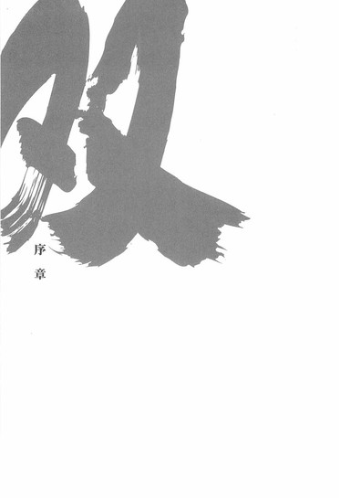
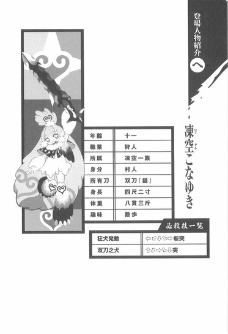

| [西尾維新] 刀語06 | |
| 西尾維新 | |
| (2015) | |
|
刀語 第六話 双刀・鎚
西尾維新
|
底本データ
一頁16行 一行42文字 段組１段
「ツルギ」、以後「ツルギ」に置換え注略。
「とがめはな──どんな苦境にあったって、自分の決断を後悔することだけはねえんだよ」
絶対凍土の地、蝦夷の踊山を彷徨う
無刀の剣士・鑢七花と美貌の奇策士・とがめの
前に姿を現したのは、天真爛漫な少女、
凍空こなゆき──！ 吹きすさぶ豪雪と
疾風のなか、七花が絶体絶命の危機に!!
追い詰められた真庭忍軍の切り札と、
とがめを狙う謎の第三勢力の蠢動やいかに!?
前半戦、まさにここに極まれり！
序章

■ ■
暗殺専門のしのびの衆、真庭忍軍は奇策士とがめ──ひいては尾張幕府を裏切るにおいて、それまで本拠地としていた里を離れている。尾張幕府は全力を挙げて、果たして彼らがどこに隠れ去ったのかを探っているが──同じく裏切り者の錆白兵の行方こそ何とかつかんだものの、未だ真庭忍軍の行方は杳として知れない。
そしてこれは、幕府でさえまだ場所を把握していない、そんな新・真庭の里の中心部に茂る深い森の中において繰り広げられた、非公開で非公式の会話である。
「──ということだ」
灯かりはない。
どんよりと曇った深夜の真っ暗闇の中である。
しかしその暗闇に不自由を感じている者はそこには一人としていなかった──当然である。そこに集まっているのは一人の例外もなく、暗闇どころか暗黒を住処とするしのびなのだから。
真庭忍軍十二頭領。
その全員が──そこに揃っていた。
......ただし、頭領十二人が揃っているわけではなく──揃っているその人数は六人である。現時点においては、真庭忍軍の頭領はそれで全員なのだった。ここ半年ほどで、真庭忍軍十二頭領は、その数を半数にまで減らされていたのだ。
たったの半年で──だ。
「......それにしても」
と、言う。
位置関係からして、六人の中におけるまとめ役と見える一人の男──髪の長い、とても冷たい目をした男。
真庭忍軍十二頭領が一人──『神の鳳凰』、真庭鳳凰である。
奇策士とがめ言うところの真庭忍軍における実質的なかしら──本人に言わせれば、それはただの貧乏くじらしいが。ともあれ、先月薩摩において、奇策士とがめと同盟を結んできたばかりの男だった。どうやら、そのことを他の五人に告げていたという場面らしい。
「あの虫組の三人が全滅したというのは驚愕の一言だな──まだ確実とは言えんが、こうして臨時招集をかけても集まらんということは、そういうことなのだろう。......鴛鴦。おぬしは何か聞いておらんか？」
「......残念ながら」
そう問われて答えたのは、若い女性の声だった。
袖のない、全身に鎖を巻いたしのび装束は他の真庭忍軍のものと変わらないが、しかしその衣装でも隠しきれないほどの妖艶さが、身体中から香り出ている──そんな女だった。
『巻戻しの鴛鴦』──真庭鴛鴦。
「わたくしは何も──聞いておりません」
が、その美貌も、眉を寄せ、目を伏せ、下唇をかみ締める──怒りと悔しさを必死でこらえているような表情を浮かべることにより、また違った印象を見せていた。
実際鳳凰もそう感じたのだろう、
「虫組の蝶々は」
と言う。
「おぬしとは、いい仲だったのだろう」
「............」
この場合の沈黙は肯定と同義だった。
また、鳳凰と鴛鴦は、二人とも真庭鳥組に属すしのびである。虫組のことをまず鴛鴦に訊いたところから見ても鳳凰はそれを以前から薄々とは察していたのだろう、それを受けて彼は、
「ならば此の度の奇策士との同盟は、おぬしにとっては不本意なものとなろうな──」
と繋いだ。
「いえ」
しかしそれにはすぐに、面をあげて応える鴛鴦。
「わたくしも──そして蝶々もしのびのはしくれ、真庭忍軍の末席を汚す者。仇討ちや報復のために動こうとは思いません」
「だな」
と、鴛鴦の言葉に続けるようにそう言ったのは、鴛鴦のすぐ隣に立っていた、真庭獣組に属すしのび──『読み調べの川獺』、真庭川獺である。川獺は粗雑な調子で、しかしそれでもどこか鴛鴦を気遣うような口調で言う。
「仇討ちっつーなら、おれは蝙蝠の馬鹿の仇討ちをしたくてしたくてしょーがねーんだが......そこはぐっとこらえるのがしのびの心意気ってもんだろ。......しっかし蝙蝠も、おれとの決着もつけないままに何で死んじまうかねえ。昔っからそういうところあったんだよなあ。接待好きとか言って、一番の友達であるはずのおれを、結構ないがしろにしてるっつーかよ。......で、鳳凰さんよ。あんた、奇策士のねーちゃんと同盟結ぶときに、当然虚刀流と会ったんだろ？どうだったよ？」
「一戦を交えたわけではないから、確かなことは言えんな。印象でよいのなら......あれはまずい。近寄らんが無難だ」
「あんたほどの忍者がそう言うかい」
「伝え聞くところによると、同盟締結後、校倉必にも勝利を収めたようだしな......正直、我は厳しい戦いになると読んでいたのだが。......日に日に強くなっていくという印象だ。否──日に日に研ぎ澄まされていく、か」
「刀」
鳳凰の言葉に割り込むように真庭魚組のひとり──『長寿の海亀』、真庭海亀だった。低く静かな──重みのある声音で、自然と皆は、ひとりだけ胡坐をかいて座っている海亀に注目した。
「虚刀流は──刀。それも無人島において、大乱の英雄、鑢六枝により純粋培養された刀となれば──その切れ味は計り知れぬ」
「海亀どのは──もしや虚刀流をご存知で？」
さして意外そうな風もない鳳凰の質問に、海亀は、
「実はな」
と言った。
「確か蝶々も知っておったはずだ」
真庭蝶々の名が出たことにより、鴛鴦が更に唇をきつくかむ。それは血が滲まんほどの力だった。しかし鳳凰や川獺と違い、海亀はそんな鴛鴦にまるで頓着しない。
「この中で、真っ向から虚刀流と相対できる者がいるとすれば、わしと鳳凰くらいのものであろう......もしも虚刀流が本来の力を発揮できているとすればだがな」
「どういう意味だよ、そりゃ」
言外に戦力外通告されたことに腹を立てたわけでもないだろうが、川獺が海亀に突っかかる。川と海というだけあって、このふたりはあまり反りが合わないところがあるのかもしれない。
「刀は使う者の実力にも左右されるということだ。わしらが今集めようとしておる四季崎記紀の完成形変体刀は持ち主に天下を取れるほどの器量を与えると言われておるが......それでも元の持ち主の腕が立つに越したことはあるまいて。......刀は持ち主を選ぶとも言うが、はて、この場合奇策士の嬢ちゃんは、虚刀流を持つに相応しいのかな」
「いっときはこの真庭忍軍さえもいいように使っていた奇策士だ。甘く見る理由はない」
鳳凰は言う。
「ゆえにしばらくは虚刀流、そして奇策士との衝突は避けるが吉。海亀どのはそう仰るが、虚刀流とやりあえば我でさえ危ういかもしれん。近寄らんが無難──だ。......何、最終的に目的を達成すれば、我らはそれでよいのだ。刀集めの大半は、奴らに任せておけばよい......中枢に不穏な動きも見えることだしな」
「中枢か」
川獺がうんざりしたように言う。
「あっちの女も──奇策士と同じくれえやべーからな。尾張幕府ってのは爆弾みてーな女を何人抱えてんだって感じだぜ」
「二人だろう」
真面目腐って、海亀が言う。
「あの二人の他にまだあんな危なっかしいのが組織内にいるようなら、四季崎の刀を何本持っておったところで幕府など成立せんわ」
「......いずれにせよ、わたくし達は奇策士とは針路を逆に取るということですね。鳳凰さま──では、どう動きますか？頭領同士の刀集め比べは中止するとして──」
話を戻す意味を含んだ鴛鴦の質問に、鳳凰は「うむ」と頷いてから答える。
「ここから先は一致団結して動く必要があろう。奇策士は、我に対しては賊刀『鎧』蒐集後は尾張に戻ると言っておったが──それはどうやらあの女らしい嘘だったようだ。奴らは薩摩の濁音港から蝦夷行きの船に乗った」
「......え、蝦夷、なら」
それまでずっと黙って、一言どころか息遣いさえも発しなかった男──『増殖の人鳥』、真庭人鳥が、独り言のような、かろうじて聞こえる小さな声で言った。
「そ、そそ、双刀『鎚』......が、あるはず、です」
「相変わらず──おぬしの情報蒐集力はさすがだな。あの蝙蝠にまるで引けをとらん。蝙蝠亡き今、刀集めの成否はおぬしと川獺にかかっていると言ってもよさそうだ──」
鳳凰が人鳥をそうねぎらうと、人鳥はそれに応えるでもなく、俯いてしまった。照れているというよりは怖がっているように、がくがくとその身体は震えていた。
鳳凰は少し考えて、「ふむ」と言う。
「確かに奇策士は、所在を知る最後の刀が双刀『鎚』だと言っていたな......そうか、それが蝦夷か。我が奇策士に教えた三本の刀の所在......それがそれぞれ、死霊山、天童、江戸であるがゆえに──今度は北から南に下りてくるつもりなのか。まったく、貪欲な女だ。せっかく中枢の動きを教えてやったというのに──まあ、そうそう予想通りに動かれてもつまらん」
「では、あたくし達は──その四本を除いた刀を探せばよいということですね」
「そうだ。残り三本......そのうち一本でも手にしておけば、最終的な勝者となれる道は開ける。できれば三本を三本とも押さえておきたいところだがな──そこで頭領招集をかけたというわけだ。おぬしらもこの半年間、無駄に日本国中を駆けずり回っていたというわけではあるまい──刀の場所とは言わずとも、何らかの手がかりは得たはずだ」
「あ......あの」
そこで人鳥が、再び口を聞いた。
「あの......あのあのあのあのあのあのあの」
「......どうした、人鳥」
「先ほどの話、話の続き、と言いますか......、刀の所在の、ことなんですが......、死霊山」
「死霊山？」
「鳳凰さまがいま仰った、死霊山には......も、もう、刀は......ない、です。と、と言うか、れ、死霊山自体が......」
「............？」
不審げな鳳凰の目に、人鳥は途切れ途切れ、訥々とした説明を始めた。それは、彼の性格ゆえのこともあっただろうが、しかしその話そのものを人鳥自身が信じきれていないかのような──そんな語り口だった。
人鳥の情報蒐集力を評価する鳳凰でも、さすがに面食らったのだろう──「それはまことか」と、問い返さざるをえなかった。
「は、はい......お、尾張幕府も、遠からず知る、知ることになると思いますが......」
「......そうか」
そして鳳凰は、もう一度──確認するように「人鳥」と訊く。
「本当にその情報に間違いはないのだな」
人鳥は無言で頷いた。
「わかった。おぬしが頷くならば信じよう。 しかし、そんな化物が存在するとそちらはおぬしに動いてもらうしかなさそうだな──狂犬」
そう言って鳳凰は、視線を右にやる──そこにいるはずのしのび、真庭獣組の真庭狂犬を見るために。
しかし。
そこには誰もいなかった。
ただただ、深い──深刻な暗闇があるだけである。
「......狂犬？」
名を呼びながら首を左右に振って──その姿を探す。他の頭領──鴛鴦、川獺、海亀、人鳥も同じようにするが──しかし、真庭狂犬はどこにもいない。
「川獺......」
即座に探すのを諦め、鳳凰は、狂犬と同じ獣組の川獺に向けて問う。
「狂犬はいつまで──ここにいた？」
「勘弁してくれよ。今のあいつが本気で動いたら、おれにだって捕らえきれねえよ──鳳凰さんが蝦夷云々言っていたときは、まだいたように思うがね」
「まずいな。ということは──奇策士を追ったか」
鳳凰がうめくように言う。
冷静沈着そうなこの男が──初めて、悩ましげな表情を浮かべた。
「奴はしのびとしては情に厚過ぎる......川獺や鴛鴦でさえ我慢しておるというのに、何というざまだ。狂犬が動いたとなると──同盟は、締結してから一ヵ月保たずに崩壊する」
しかし──鳳風のその言葉に、反応する者はなかった。言った鳳凰自身を含め、真庭忍軍十二頭領ならば全員がわかっているからだ──
真庭忍軍十二頭領がひとり、真庭狂犬。
あれが動けば──誰にも止めることはできないと。
■ ■
ここに来てついに全員登場！
真庭獣組──真庭蝙蝠、真庭川獺、真庭狂犬！
真庭鳥組──真庭白鷺、真庭鴛鴦、真庭鳳凰！
真庭魚組──真庭喰鮫、真庭人鳥、真庭海亀！
真庭虫粗──真庭蜜蜂、真庭蝶々、真庭蟷螂！
みんな揃って真庭忍軍十二頭領！
ちなみに『真庭魚組とか言って、海亀も人鳥も魚じゃないんじゃ......？（ていうか人鳥に至っては真庭鳥組に入っているべきだろう......）』なんて空気を読まない突っ込みを入れる人間は真庭忍軍には皆無だった！
そんなことを言っているようじゃ真庭忍軍には入れないぞ？
とかなんとか言ったところで！
双刀『鎚』、超・見・参！
人情忍情刃傷沙汰！
刺激突撃時代劇！
刀語、山勘任せの第六巻♪
一章 絶対凍土
■ ■
「ああ......確かに方向はそっちであってるけれどもよ──あんたら、本当にこれから踊山に向かうつもりか？たったふたりで行くなんて無茶もいいところだぞ......この蝦夷地は、伊達に絶対凍土と呼ばれているわけじゃない。中でも踊山は折り紙つきだ。知らないわけじゃないだろう？悪いことは言わないから、いったんどこかの村にでも寄って、しっかりと準備をしてから向かったほうがいいんじゃないのか？来るんじゃなかったと、山に這入ってから後悔しても遅いんだぞ」
「ふっ......」
口調こそ乱雑だが、しかし本心から心配するようなそんな声に対し、十二単衣を二着重ねたほどに絢爛豪華な衣装を身にまとった白髪の女は失笑交じりに応える。
「おい七花。何もわかっておらんこの男に、わたしの格好いいところをひとつだけ教えてやれ」
「ああ、任せておけ、とがめ」
そう頷くのは、白髪の女──とがめの隣に立つ、七花と呼ばれた筋肉質で背の高い、ぼさぼさ頭の、上半身はだかにはかま姿の青年である。
「いいか、とがめはな──おれが惚れたこの女はな、どんな苦境にあったって、たとえ死ぬような目にあってさえ、自分の決断を後悔することだけはねえんだよ」
■ ■
「来るんじゃなかったーっっっ！」
一歩先さえ見えない豪雪吹きすさぶ中、尾張幕府直轄預奉所軍所総監督、奇策士とがめの後悔の叫びが響いた。
しかしそんな必死の絶叫も、吹雪の音にあっという間にかき消される。雪山の中大声を出して雪崩が起きるというのは物語の展開としてよくある話だが、しかしこの状況の中ではそんなお約束は期待するべくもなかった。
蝦夷地、踊山。
それは決して険しい山というわけではない──刀集めの旅の三ヵ月目、敦賀迷彩のいた三途神社に向かうためにふたりが登った出雲大山に比べれば、標高は半分にも及ばない。
しかし絶対凍土・蝦夷地である。
水無月においてさえ、平均気温は驚異の氷点下二十二度。
春夏秋冬関係なく、一年を通して決して雪が降りやむことはない。
ましてこの踊山は極度の豪雪地帯として知られていた──陸奥の死霊山、江戸の不要湖と並ぶ、尾張幕府の指定する壱級災害指定地域のひとつである。まともな人間なら近づきさえもしないし、そもそも近づく用などない。どうしても登らねばならないのならば、事前に一ヵ月以上かけて綿密な準備をし、対策を練り、大人数でもって臨まねばならないのだが──しかし奇策士とがめは、船の着いた港から犬ぞりで直接この山の麓にまでやってきて、あろうことかそのまま何の準備もなく、七花とたった二人で踊山に足を踏み入れたのだ。
わからなくもない。
彼女が今与えられている任務、伝説の刀鍛冶、四季崎記紀の作りし完成形変体刀十二本集めは極秘の任務で、そうそう他人に協力を仰ぐわけにはいかないし、またじっくりと準備をしているような暇はない。
だがしかし、基本的に尾張の屋敷町で暮らす彼女は絶対凍土、壱級災害指定地域をなめていた。「まあわたしは厚着しているし、寒いのをちょっと我慢すればいいのだろう」程度に考えていた。
浅はかだった。
「寒いーっ！ 寒い寒い寒い寒いーっ！ し、死ぬ、死ぬ死ぬ、死んでしまう......ああ馬鹿だった、どうしてわたしはあの親切な港職員の忠告をきかなかったのだーっ！」
「とがめ、格好悪い......」
ちなみに、さすがの七花と言えど、この吹雪の中、上半身はだかではいられない。港で購入した上着を着込んでいた。......そう、港の段階で、もう十分寒かったのである。
その上で、七花はとがめを負ぶっていた。
七花の足が膝まで沈んでしまうほど雪が積もった山を登ることはとがめには物理的に不可能なので、やむなく（？）この体勢になったのである。おんぶという格好は、出雲大山を登るにあたってとがめが拒絶した体勢だったが（その結果彼女はお姫様だっこを選ぶという、謎の選択をした）、しかし背に腹は代えられないというか、互いに互いの体温で温めあうために身体を密着させるというこの体勢を、今回はとがめは許容したのだった。実際、筋肉質の七花の身体は懐炉のように温かかったので、とがめは恥を捨てて必死で彼の身体に、からみつくようにしがみつく。またそうしていないと、吹雪の風圧で小さな身体がどこかに吹き飛ばされそうだった。
「う、うううう......帰りたい、帰りたい、帰りたい......」
「いや、そんなこと言ったって、ここまで来ちまったらもう帰れないぞ......」
「そなたは寒くないのか......？」

「全然？ ほら、上着着てるし」
「それがどうした......」
わたしなど髪が凍ってきたぞ、ととがめは言いかけたが、しかし七花の髪も似たような状態であることに気付き、その言葉は呑み込んだ。
要するに七花は刺激に鈍いらしい。
体勢的に、とがめは七花を壁にしているから感じる寒さは少なからず緩和されているのだろうが、逆に言えば七花は寒さの直撃を受けてしまっているはずなのに......。
「しかしすげえ雪だな......そっか、風が強すぎるから、逆に膝までくらいしか積もらないんだ。雪もすげえけど、本当にすごいのは風だもんな。常に雪崩が起きているみたいなもんだ。これじゃ真っ直ぐ歩くのも難しいぜ」
「し、七花......」
とがめが弱々しい声で言った。
「わたしが死んだら......」
とうとうとがめは自分が凍死したのちの話をし始めた。
「わたしが死んだら、そなたひとりで『ちぇりお』を気合を入れるための掛け声として、日本中にはやらせてくれ......」
「な、何言ってんだよ！」
七花がとがめを怒鳴りつける。
「しっかりしろよとがめ！ このくらいの寒さで何弱気なこと言ってんだよ！」
「わたしはもう無理だ......わたしはどうやらここまでのようだ......。だから七花、どうか『ちぇりお』のことだけは頼む......」
「無茶言うなよ！ 『ちぇりお』を間違った意味ではやらせるなんて、そんなのおれ一人じゃできないよ！」
「そなたならできるさ......そなたはわたしが選んだ刀だ......」
「無理だ！ とがめが、とがめがいてくれなきゃおれなんか何もできないよ！とがめがいなきゃ『ちぇりお』をはやらせるなんて無理なんだよ！」
「何を言う......この半年で、わたしはそなたに教えられる限りのことは教えた......もうわたしの奇策などそなたには必要ないさ。『ちぇりお』をはやらせることくらい、今のそなたには造作もない......」
「しっかりしろよ！ とがめにはまだ、やらなくちゃいけないことがあるだろう！」
「やらなくてはいけないこと、か...」
とがめはゆっくりと目を閉じ、薄く笑う。
「果たして、それは本当にやらなければならなかったことなのかな......ふふふ、わたしはどうして、そんなことにこだわっていたのだろう」
寒さのあまり奇策士とがめは、『おいおいそれに気付くのはまだちょっと早いよ』というような台詞を、うわごとのように口にし始めた。
「たったひとり、家族を殺され、家を滅ぼされた恨みのために戦ってきたが......そなたとこれまで旅をして、わたしは初めて気付かされた......わたしのやってきたことは、本当は何の意味もないのではないかと......」
「と......とがめさん？」
「お笑い種だ......本当の幸せとは、過去を振り向くことではなく、誰かと共に、新たな命をはぐくむことにあると......前に向かって共に歩むことだと、そんなことにさえわたしはこれまで気付かなかったのだ......」
「だ、だからとがめ、それに気付くのはまだ早いって......」
「二十年間、孤独にこの道を歩んできたわたしだが......出会ってたかが半年のそなたに、わたしのほうこそ教えられた......人はどう生きるべきなのかを」
「いや、おれはまだ、そこまであんたの人生観を変えるようなことしてねえよ！」
七花は頭をそらすことによって、後頭部をとがめの額に食らわした。頭突きである。その痛みで、ぼんやりとしていたとがめは、「あ」と意識を取り戻す。
「なんであろう......随分と展開を先取りしたことを言っておったような気がするぞ」
「気のせいってことにしておけ......それよりとがめ。山に這入ったら教えてくれるっつってたじゃねえか」
「ん......何をだ？」
忘れていた。
奇策士とがめは本当に寒さに弱いようである。
「だから、今回の敵と──それから双刀『鎚』について」
「ああ......そうであったな」
それでも言われてすぐに思い出して、神妙に頷くとがめ。
「そうだ......わたしたちは双刀『鎚』を手にするために、はるばる薩摩から、この蝦夷にまでやってきたのだから」
「............」
......真実は、そもそも蝦夷に来るつもりはまだなく、本当は薩摩から幕府の中枢、すなわち尾張にいったん帰ろうと思っていたのだが、しかし四季崎記紀の作りし完成形変体刀十二本の五本目、賊刀『鎧』の所有者だった海賊団の船長、校倉必の姦計を見抜くことができず、尾張行きではなく蝦夷行きの船に乗せられてしまったというだけなのだが、しかしとがめの脳内において、その過去の思い出は完璧に書き換えられてしまっていた。
基本的に彼女は現状肯定の女なのである。
まあどの道、蝦夷の踊山に双刀『鎚』があることはあらかじめ知れていたのだから、いずれは来なくてはならない場所だったのだが──
「しかしな、七花。前にも言ったことがあると思うが、双刀『鎚』がどのような刀なのかというのは、まだよくわからんのだ」
「え？ ああ、そう言えば、出雲大山を登るときにそんなことを言ってたっけ......でも、そんなわけねえだろ。双刀『鎚』は、所在・所有者がわかっている、現時点で最後の刀なんだから」
「うむ。所在と所有者は知れておる」
「なら」
「しかしどんな刀なのかはわからんのだ」
力強く、とがめは言った。
しいて力強く言うのには、恐らく寒さから気をそらすためという意味合いもあるのだろうが。
「旧将軍の時代から──否、四季崎記紀が完成させたそのときから、双刀『鎚』は変わらず不動に、この蝦夷踊山にあるそうだ。一度も動いたことがないと聞く」
「つまり、四季崎記紀はこの山に来たことがあるってことか？」
「そうなるな。あの伝説の刀鍛冶がわざわざこの壱級災害指定地域にまで足を運んで......そして作った変体刀だ。これまでの刀に決して劣らぬ、なまなかな刀でないことは確かであろう」
「だよな......寒さに強い刀とかかな？」
四季崎記紀の作った完成形変体刀にはそれぞれ、主題となる特徴があった。
絶刀『鉋』ではそれは頑丈さであり、斬刀『鈍』ではそれは切れ味であり、千刀『ツルギ』ではそれは数量であり、薄刀『針』ではそれは脆弱さであり、賊刀『鎧』ではそれは防御力であった。
「寒さに強い刀はないだろう......どんな刀なのだ、それは」
それはいつもならば『ちぇりお！』の掛け声とともに入る突っ込みだったが、今のとがめは『でもそんな刀があったらいいなあ』と半ば本気で考えているので、突っ込む声もいささか迫力が欠けていた。
その代わりとばかりに、一応は『寒さに強い刀』と言って言えなくもない七花の身体に、自分の身を更に密着させる。七花の首筋にみずからの頬をこすりつけ（つまり頬ずりだ）、摩擦熱を稼ごうとする。
いちゃつきぶりが堂に入ってきた奇策士と虚刀流七代目当主ではあったが、しかし今回の場合はとがめの命がかかっているので、あんまり笑っていられるような状況ではなかった。
「そっか......やっぱり旧将軍は、その双刀蒐集にも失敗したんだよな？」
「うむ。刀狩令の発令によって、この地で作られた刀があるらしいことを突き止めたはよいが、しかし実際踊山に来てみれば、ご覧のとおり、この有様だ。双刀を探し出す前にほとんどの兵力は削がれてしまい、何度となく撤退を余儀なくされたそうだぞ」
「......それって寒さに負けただけであって、決して双刀『鎚』がすごいというわけじゃないんじゃねえのか？」
まあ今まさに同じ目に遭っているおれ達の言うことじゃないが、と七花はぼやく。
「いや、それでも最終的には双刀『鎚』を確認し、その所有者と相見えることはできたそうなのだが......そこから先の情報がなくてな」
「情報がない」
「うむ」
もっともらしく頷くとがめ。
しかし寒さのため、それが頷きなのか震えなのかいまいちよくわからない。
「凍空という一族が代々所有しておったことは判明したのだが──その凍空一族にどのように敗北したのか、その凍空一族はどのように双刀『鎚』を振るったのか、その辺りがどうしてなのか語り継がれておらん」
「......全滅させられたってことかな」
「ふむ、ありうるな。戦闘に生き残ったところで、この雪ではな。敗走するにも厳し過ぎる天候であろう」
「なるほどね。まあ、これまでみたいに事前に相手の氏素性が知れている場合のほうが、本当は珍しいんだ、その辺は仕方ないとしておこうぜ。どうせこっから先は全部そうなんだし、双刀の所有者に会えばわかるだけの話さ。そして所有者に会ってしまえば、双刀の特性ってのもすぐにわかるだろ。何せここまで、完成形変体刀はすべて、相応しい持ち主に所有されていたんだからな──」
この世で最も堅い刀──絶刀は、この世で最も柔らかい忍者、真庭蝙蝠に。
この世で最も鋭い刀──斬刀は、この世で最も速い居合いの剣士、宇練銀閣に。
この世で最も多い刀──千刀は、この世で最も多くの刀を使う巫女、敦賀迷彩に。
この世で最も弱い刀──薄刀は、この世で最も強い堕剣士、錆白兵に。
この世で最も難き刀──賊刀は、この世で最も攻撃的な海賊、校倉必に。
所有されていた。
刀は斬る相手を選ばない。
しかし──持ち主を選ぶ。
まして双刀『鎚』もまた、四季崎記紀の完成形変体刀の一本である。
自身──自らの刀身に相応しい所有者を選んでいるだろう。
「......問題は、今もまだその凍空一族ってのが、その双刀を所有し続けているかってことだろ？所有者が他に移っていたら厄介だ」
「し続けておる......はずだぞ。尾張幕府によって壱級災害指定地域に指定されて以来、この踊山は監視され続けておるからな......わたしが幕府の人間でさえなかったら入ることもままならなかったはずの、そんな場所だ」
「..................」
『でさえ』と言ったことが彼女の今の心境を如実に表していたが、七花はそんな失言を聞き流してあげるだけの人間的優しさを、ここ半年の旅路で身につけているようだった。
「前の因幡砂漠に似ているな」
「因幡砂漠は災害地域には指定されておらぬよ......危険地帯ではあるがな」
「しかし凍空一族ってのは、ずっとここに住んでるんだろう？そいつらは死なないのか？」
「双刀同様、凍空一族についても詳細は不明だが、どうにも特殊な一族と聞いておる。寒さに耐性があるのであろう......ちなみにその村には凍空一族以外の者は暮らしておらぬそうだから、前回のように余計な邪魔が入る心配はない──全員が敵だ」
「敵か」
「うむ」
それも──それこそ因幡砂漠の宇練銀閣同様に、度重なる勧告を無視し、幕府の出した壱級災害指定地域に住み続けている、言うならば無法者の集団だ。
いざとなれば──斬っていい。
ためらいをおぼえる必要はない。
「むろん、所有者は一族の中の誰かひとりだろうし──できれば平和裏にことを運びたいところだが、如何せん好き好んでこんな雪山にこもっておるような連中だ。一筋縄ではいかぬであろう......幕府の権威が通じる相手だとも思えんしな」
「通じる連中なら、旧将軍の刀狩りのときにとっくに双刀を献上しちゃってるだろ」
「であろうな......いずれにせよ、今回は事前情報は特にない。機密もへったくれもない──ぶっつけ本番に近いと思ってくれ」
「なに。いつものことだ」
不敵にそう言って──
そして、そこで七花は、改めてとがめに訊いた。
「しかしさ、とがめ」
「なんだ」
「今回、双刀『鎚』を蒐集できたとして──」
「できたとして、ではない。するのだ」
「ああ、そうだな。そうだった。今回、双刀『鎚』を蒐集する。そして残りの六本も蒐集するとして──予定通り、最終的に十二本とも集めるよな。それからとがめは、一体どうするつもりなんだ？」
「..................」
七花のその質問に、とがめはすぐには答えなかった。
焦らしているわけではない。
答えられなかったのだ。
何気なく投げかけられたその質問は、あまりにも探過ぎる──しかし、だからと言ってこんな雪山の中でもなければ、できないだろう質問だった。
そういう意味では、七花も時機を計ったと言える。
少なくとも、薩摩から蝦夷までの船中で何となく漏らしてしまったらしいあれらの言葉とは、意味を別にするものだろう──と。
とがめは回想する。
賊刀『鎧』の蒐集を終え、まだ尾張行きの船だと信じていたその船中で、七花はおもむろにこう言ったのだ──
「虚刀流先代当主の鑢六枝──つまり親父を、おれはこの手で殺している」
そして続けて、
「それからとがめが、先の大乱の首謀者、奥州の顔役──おれの親父が殺した飛騨鷹比等の実の娘であることを、おれは知っている──」
である。
七花はそう言ったのだ。
正直言って、とがめにとって七花にそれを知られていたことはまったく予想外のことだった──まったく考えもしなかったことだった。一瞬ではあるが、この聡い女が、七花の言葉をまるで理解できなかったくらいである。
しかしそれでも彼女は奇策士。
すぐに七花の言った言葉の意味を把握する。
「鑢六枝どのを殺していたというのは」
とがめはまず、七花の最初の告白のほうについて、自らの見解を述べることにした。むろんとがめにとってより重要なのは二番目の告白のほうなのだが、そちらについてはより重要であるがゆえに、後回しにしたのだ。
最初の告白に触れている間に考えるつもりだった。
「わたしにとって、さほど悪い情報ではない──わたしはそなたを鑢六枝どのの代役として雇ったところがあったからな。その鑢六枝どのよりもそなたが強い、鋭き刀であるというのは──これからの刀集めにとって重要だ」
「......そういうもんか」
七花はとがめの反応に安心したようだった。
胸を撫で下ろしたといったような態度だった。
「なんだよ、姉ちゃんとか敦賀迷彩とか、とにかくそのことを秘密にしとけとか言うからさ──なんかあるのかと不安だったんだよ。とがめに喜んでもらえるなら、むしろさっさと言っとけばよかったな。あーよかった」
無邪気にそう言った七花。
しかし、とがめの反応は半分は本当だが、残りの半分を伏せている──そして七花の姉、つまり鑢七実と、三途神社の長、敦賀迷彩が考慮したのは、残りの半分のほうだったろう。
父親殺し。
それに理由がないとは思わない。
自らの身体を一本の日本刀に見立て、無刀でもって戦う拳法ならぬ究極の剣法──恐らくは一子相伝の定めでもあるのだろう。そして師匠である先代当主を越えたとき、初めて次代当主を襲名できる──とか。
伝統のある流派においては、さほど珍しい話ではない。
武術武芸に一切のたしなみを持たないとがめにも、その程度のことは予想できる。そしてそのことについて理解を持たないわけでもない。
だから七花の父親殺しを批判、ないし非難するつもりはない。
だがしかし──
「？」
きょとんとした七花の表情からはまるで感じられない。
父を殺したという事実に対する悲しみ。
父を殺したという事実に対する慙愧の念。
そういったものが一切感じられない。
七実や迷彩が、どうして秘密にしろと言っていたのか、七花はそれをまったくと言っていいほどわかっていない──
刀。
存在としての──刀。
何の覚悟もなく──父すら殺すか。
言語道断の反逆者として父親を殺された──一族を皆殺しにされたとがめとしては、その言葉に何も感じないわけにはいかない。
「......ふう」
とがめは海を見つめながらため息をついた。
訊いたのはとがめだ。
わたしに黙っていることはないかと訊いたのは、確かにとがめだ──しかしその程度の質問で話してしまうくらいなら、どうしてこれまで七花が黙っていられたのか不思議に思っていたが、あのふたりが口止めしていたというのなら、わからなくもない。特に七実の口止めは大きかったのだろう──
迷彩は既に死んでいるし、七実もそう七花を口止めした以上は、他にそれを吹聴するような真似はとりあえずはすまい。
そしてそれは──二番目の告白についても同じはずだった。
奇策士とがめ。
出自不明の彼女の、その出自──尾張幕府にとっては不倶戴天の敵、一族郎党皆殺しにされたはずの奥州の顔役、飛騨鷹比等の娘──！
そんな彼女が尾張幕府にいる理由。
尾張幕府に入り込み──要職についている理由。
そして、四季崎記紀の完成形変体刀集めをする、本当の理由──！
「わたしの父親のことだが......誰から聞いた？」
やはり気になるのは情報の漏洩元である。
その出自を幕府に知られてはおしまいだ──最悪の場合でも、あの不愉快な女に知られることだけは避けなければなるまい。
「えっと」
とがめとしてはそれでも平易に訊いたつもりだったが、感情が少なからず表に出てしまったのだろう、その剣幕に七花が戸惑う。
──いかんな。
沈着冷静であらねばならないのに。
やはり父親のこととなると──わたしでも精神が乱されるらしい。
「不承島で戦ったあの忍者......真庭蝙蝠から」
「............」
そうか、ととがめは一拍おいてから頷いた。
真庭蝙蝠──真庭忍軍十二頭領の一人にして、情報蒐集に秀でたしのび。
「なるほどな。あの忍者ならば──不可能ではないか。真庭忍軍の中でも、奴とは一番付き合いがあったからな......。そう言えばあのとき、そのようなことを言っておったわ......そなたもそれを聞いていたか。蝙蝠が情報元では、納得するしかないな......問題はその蝙蝠が、そなた以外の誰に、そのことを喋ったか、だ。真庭忍軍の頭領全員には知られておると見るべきなのか......いや、先の真庭鳳凰の言い草を見る限りは──」
「喋ったのはおれにだけだと思うぜ。追い詰められての時間稼ぎに言ったみたいだし......そのあとでおれを殺す予定だっただろうから、秘密を漏洩するつもりはなかったと思うな」
「......ああ、そう言えば、他の十二頭領と競争しておったのだったな──自身が優位に立つための情報操作といったところか......ふん。陰険なあのしのびらしい、小賢しさだな」
真庭蝙蝠に対する悪態をつきながら──とがめはならば、と考える。
七花はそれを知って──知ってから、わたしの刀になることを選んだということだ。
いやむしろ、そんなわたしだったからこそ──七花はわたしを選んだ。
わたしに惚れた。
惚れたのだ。
「いやいやいやいやいやいやいやいやいやいやいやいやいやいや！」
ばしこん、ととがめは七花の手を平手で叩いた。手形が残りそうなくらいに力をこめた、容赦のない一撃だった。
避けない七花。
しかしそれでもさすがに、
「な、何すんだよ」
と言う。
「すまぬ。照れ隠しだ」
「照れ隠し!? 今のが!?」
「そういうことならば是非もないわ。大して状況は変わらぬということだ......いや、むしろよくなったとさえ言える。七花──ならばこのわたしが改めて命令しておく。そのふたつの件──今後一切、わたし以外の誰にも話すことを禁ずる」
「わかった」
即答だった。
それはいま、とがめの平手を避けなかったのと同様、忠義心の表れと見ることもできたが──しかし逆に、ことの重要性を一切理解していないと見ることもできた。
刀。
情緒も情感も持たない、一本の刀──しかし。
薩摩において、校倉必に対しては人間らしい感情も見せた......。
その辺りが肝要か、ととがめは思った。
そして──それ以降、そのことについてふたりの間で会話が交わされることはなかった。船中において、その船が尾張行きではなく蝦夷行きであることに気付く前も気付いた後も、蝦夷に着いてから踊山に向かうための犬ぞりの上でも、踊山に入ってとがめが七花に負ぶわれる前も負ぶられた後も──まるで忘れてしまったかのように、触れられることはなかった。
たった今まで。
しかしここで七花はついに訊いた──
「今回、双刀『鎚』を蒐集する。そして残りの六本も蒐集するとして──予定通り、最終的に十二本とも集めるよな。それからとがめは、一体どうするつもりなんだ？」
ずっと訊きたくて訊きたくてしょうがなかったが、吹雪の中、誰にも盗み聞かれる心配のないこの状況を待っていた──というわけでは、決してないのだろう。それならばもっと早くこの話題に触れていたはずだ。
──やはりな。
とがめは確信する。
七花にとって、大事なのはとがめが刀を集める理由なのであって──とがめがそれからどうするつもりなのかということは、比較的どうでもよいことなのだ。
いつ訊いてしまってもいいような──特に気になってもいない、どうでもいいこと。
理由に惚れたのであって、目的に惚れたのではない。
逆に言えば、たとえとがめがどうするつもりであろうとも、七花は刀としてそれに追随するつもりだということだ──とがめの生き様にどこまでも付き合い、どこまでも付き添うつもりがあるということだ。
──それが虚刀流か。
覚悟もなく人を斬る──
何も捨てずに人を斬る、一本の刀。
「さて、どうしたものなのかな」
「............」
「いや、とぼけておるわけではないよ──ただ、考えておるだけなのだ。どういう場合でもどういう風にでも動けるようにしておきたいからな。まだ確定したひとつの答を持ちたくないというのが本音だ」
「............」
「それに、まだ道半ば、どうにも中途な場所であり、遮二無二走り続けるしかない時期だということもある。とりあえずは四季崎記紀の完成形変体刀集めを達成せんことには話にならん。取らぬ狸の皮算用をするつもりはない。しかし恐らくはこの旅路を終えたときには、わたしは結論を出さなければならぬのだろうな......」
「..................」
「......七花？」
あまりに七花から反応がないので、何かまずいことでも言ってしまったかととがめは心配になって、七花の顔を後ろから覗き込もうとした。それがよくなかったのだろう──いや、気付けたという意味ではよかったのかもしれない。ぎりぎりで体勢を保ち歩き続けてきた七花は、とがめのその微妙な体重移動によって、前のめりに倒れてしまったのだった。
雪に身体が埋もれ、とがめは、「ぎゃふん！」と投げ出される。
「なにすんじゃー！」
といつものごとく激昂するも、七花からの返しはない。
雪に埋もれたまま──彼は微動だにしない。あっという間に、七花の身体の上に白く暴力的な雪が積もっていく。
「......七花？ しちりん？」
しばらく使うのを忘れていた愛称で呼びかけながら、とがめは七花の身体を揺する──しかし、反応はない。思いあまって、うつ伏せに倒れた彼の身体を無理矢理に起こしてみれば──
七花は、
「うう」
と、呻いた。
苦しそうな表情ではあるが──意識はある。
とがめはほっとして、
「......、し、死んだのかと思ったぞ」
と、安堵のため息をついた。
「どうした？ 雪に埋もれていた石にでも躓いたか？」
だが、七花はとがめのその言葉にも返事をしない。
ただ──苦しそうにしている。
「お......おい、七花？」
「......て、手足が」
七花はやっと──言った。
「手足が思うように動かない......」
「凍傷だーっ！」
とがめは天に向かって叫んだ。
「たわけが！ 寒いなら寒いと言わんか！ やせ我慢しておったとは思わんかったわ！」
「い、いや、寒くはないんだけど......身体がだんだん言うことをきかなくなってきて......」
「本当に鈍いだけだったのか!?」
このばか！
とがめは精一杯の声でそう怒鳴る──しかしその怒鳴り声もまた、吹雪によってすぐにかき消されてしまう。
「ばか、ばか、ばか......拳法家が手足を粗末にしてどうする！」
「け、拳法じゃなくて剣法......」
「そんな建前を言っておる場合か、ばか──雪山の寒さをなめおって！」
「いや、あんたに言われたくないって感じだけど......ああなるほど、これがつまり寒いって感覚なのか......」
七花の育った不承島は日本海側なので、当然冬になれば雪は降る。そんな中でさえ薄着で過ごすことのできた七花は、基本的に寒さという感覚をそこまで理解してはいなかったらしい。
だがいくら本人が鈍くても、寒さは着実に、そして確実に身体を蝕む。鑢七花はここに来てようやく、寒さという感覚を文字通りに肌で覚えたのだった。
さきほど本人も言った通り、引き返せるような地点ではない。
遅過ぎたくらいだった。
「え......って、どうしよう......」
とがめはここに来て、困惑する。
これこそまさに、笑いごとではない。
七花が倒れるという展開はまったくの想定外だった──しかし、彼はここまでずっと、とがめの壁となるように、彼女を負ぶって踊山を登ってきたのである。
必然と言えば必然の展開だ。
凍空一族の住む村まで、あとどれくらいなのか──その距離感は、一歩先さえ見えないこの雪山では計りようがない。
引き返すわけにはいかなくとも──先に進むにも戸惑いを覚える状況だ。
「これ......ちょっと本当にやばいんじゃ......」
これ以上七花に無理はさせられない──手足の凍傷がこれ以上酷くなれば、彼は刀としての役割を果たせなくなる。早急に休ませなければならないが、この吹雪から身を隠せるような場所を探すのにも、果たしてどれほどの時間がかかるのか。その間に、遠からず自分も七花と同じ状態になるだろう。否、ここまでの道程のように七花が壁となってくれない以上、それは遠からずどころかあっという間のことだ。とがめの肉体的耐性は一般人を大きく下回る。
壱級災害指定。
その意味をとがめは実感する──
「う──」
七花が──目を閉じる。
眠りにつくように。
永遠の眠りにつくように。
「だ、駄目だ！ 寝るな、寝たら死ぬぞ！」
雪山で遭難したときのお決まりの台詞だったが、この場合は酒落にならない──そのままの意味である。七花の頬に炸裂するとがめの平手打ち、彼がそれを避けないのは、こうなってしまえば忠義ゆえではないだろう。
そうしているうちに、とがめの意識も危うくなった。
まさしくあっという間だ。
「ま──まだだ。どうする──ここからどうすればいい」
とがめはしかし、それでもまだ諦めない。
気温が既に氷点下三十度を越えたこの過酷な状況下においてさえ、手詰まりとしか思えないこの残酷な状況下においてさえ、しつこくしぶとく知恵を絞る──ここまでくれば、それは意志が強いなどというものではない。
異常だった。
異常なまでの──執念だった。
父親の無念を晴らすための執念。
一族の無念を晴らすための執念。
どうするつもりなのかと問われ、どうしたものなのかなと、そんな答を返した彼女だったが──しかしこの決意のほどを鑑みれば、既に結論を出しているのだろうと言わざるを得ない。
父を殺した──一族を皆殺しにした、家鳴将軍家をどうするつもりなのか。
尾張幕府をどうするつもりなのか。
はっきりと、結論を出していると。
どういう場合でも、どういう風にしてでも──たった一つの目的を達成する腹積もりだと。
七花に対してはやはり、とぼけただけだと。
あくまでも。
全てを捨ててここまで歩んできた彼女にあるのは、たったひとつの目的だけだ。
覚悟。
それだけの覚悟を、彼女は決めている。
刀とは対極の──覚悟。
七花にとっては理由が重要なのだろうが──とがめ本人にとっては、唯一重要なのは生き様の行き着く先だけなのだ！
「──あの」
不意に。
吹雪の中──怒鳴り声すら通らない豪雪の中、何と言うほどのこともないささやかな、しかし確かにこちらに対して呼びかけるような声が──とがめの耳に届いた。
とがめは顔を起こす。
そこにいたのは──雪女だった。
■ ■
理由が重要なのであって目的は重要ではない。
とがめの、七花に対するその読みは当たっている。
しかし七花はひとつだけ、考えていた。
心のどこかで考えていた。
一体どうするつもりなのか──
本当に訊きたかったのは、刀集めが終わった後の自分──虚刀流という名の刀の処遇である。
虚刀流を一体どうするつもりなのか。
とがめの父親──飛騨鷹比等を討った張本人は、虚刀流六代目当主、鑢六枝である。大乱の英雄と称された六枝こそが、その手刀でもって、反逆者、飛騨鷹比等を討ったのだ。ならばその息子である七花を含む虚刀流そのものが、彼女にとっては復讐の対象になると言える。
果たして奇策士とがめは。
全てが終わった後、鑢七花という刀を一体どうするつもりなのか──もちろん。
どうするつもりであったところで、七花はそれに付き合い、付き添うつもりなのだけれど──旅を始めた直後ほどに、そのことに無関心でいられない自分にも、気付いていた。
二章 凍空一族
■ ■
道なき道を疾走するふたつの影があった。
その動きは誰の目にも止まることはない──速さゆえと言うよりはその特殊な動きゆえに、遠目からは──ひょっとするとすぐ隣を通り過ぎられてさえ、視認できない無気配の移動走法だった。
ふたつの影は袖のないしのび装束を身にまとい、全身に鎖を巻いている。
影のひとつは『神の鳳凰』真庭鳳凰。
影のひとつは『読み調べの川獺』真庭川獺。
真庭忍軍十二頭領、そのうちふたりが揃って並んで──休むことなく一定の速度で、疾走し続けているのだった。
誰にも気付かれることなく。
木の葉一枚散らすことなく。
「しかし」
口を開いたのは川獺だった。
この速度で走りながら呼吸はまるで乱れていない──そして走りながら喋ったところで、まるで減速する気配がない。肉体と声帯が切り離されているがごとき有様だった。
「それにしても参ったことになったな──真庭忍軍にはそもそも団体行動の取れる奴がいねえってのはもう定説だが、しかし狂犬の奴は中でも群を抜いてやがる。一致団結とか言ってたのがちゃんちゃらおかしいぜ。せっかく鳳凰さんが結んできた同盟をおじゃんにしちゃう気かよ」
「仕方あるまい」
そう応える鳳凰の声も、また何の乱れもない。受け答えしながら、ふたりはまったく同じ調子で走り続けるのだった。
「奴が仲間の命というものに並々ならぬ思い入れを持っていることに関し、配慮が足りなかった我の失敗だ──それに巻き込んでしまい、おぬしにもすまなく思っておる」
「そう言ってくれるなよ、鳳凰さん──狂犬のやったことに関しちゃ、おれも一応、獣組指揮官としての責任があるさ。......とは言え、たとえ追いつけたところで、おれに狂犬を説得できるとも思えねえ。海亀の野郎の言い草じゃねえが、狂犬を言いくるめることができるのは鳳凰さんと......あとは忍術的に人鳥くんくらいじゃねえのか？」
あ、いや、と川獺はそこで思い出したように付け加える。
「そうだそうだ......海亀の言い草ってんなら、虚刀流は狂犬に打ち勝てるってことになっちまうのかな？鳳凰さんはどう見るよ」
「真剣勝負に絶対の予想などありえんよ。しかし勝ち負けなどこの際どうでもよい──そこに至る前にことを差し止めたいというのが本音だ。とがめ嬢──奇策士と我らとの同盟を崩すのは幾らなんでも時期尚早だ」
「しかし......どうかね。説得も何も、そもそも蝦夷までに今の狂犬に追いつけるかどうかってのは微妙だぜ。鳳凰さんでも、そりゃ条件はおれと同じだろ。人鳥くんの情報からすっと、双刀『鎚』があるのは壱級災害指定地域の踊山なんだろ？むろん、しのびのおれたちにしてみりゃー、災害指定地域なんざ遊技場みてえなもんだが──雪山ってのはどうにも追跡に手間取りそうだ」
「むろん、狂犬に追いつき奴を止めることこそが最優先の目標だが──しかし念のためにそれが間に合わなかったときのことを考えておかねばならん。狂犬が奇策士と虚刀流と相見えてしまい──狂犬がふたりを食い散らかし、ふたりを亡き者とした場合──これは次善ではあるが、よしとしよう。だが問題はそうならなかった場合だ。狂犬が挑み、敗れ、亡き者にされた場合......その場合我らは十二頭領を更にひとり失い、しかも同盟まで破れるという最悪の結果を迎えることになる」
「だな」
「だから川獺それだけは防がねばならん」
鳳凰は言った。
ごく何気ない口調で。
「もしもの場合はおぬしに死んでもらうことになる」
「あいさ、了解」
対する川獺もまた──ごく何気ない口調で答えた。
「おれもしのびとして大概のことは経験したけど、未だ死んだことってのはねーからよ......こうなってくると逆に楽しみだせ。向こうで蝙蝠の馬鹿も寂しがってるだろうしな」
「......気になるのは凍空一族だな」
嘆息交じりに鳳凰は言う。
「双刀『鎚』の所有者の一族......壱級災害指定地域の踊山に古来より生息する──凍空一族」
「人鳥くんの情報によれば、とんでもねえ一族らしいからな......双刀『鎚』の特性もそうだけどよ。変わった刀には変わった所有者がつくもんだ」
「単に奇策士と虚刀流、そして我らが真庭狂犬との戦いだと思っていては足元をすくわれることになるかもしれん。双刀『鎚』の所有者、凍空一族が果たしてどのように噛んでくるのか──」
「壱級災害指定地域に好き好んで住んでいる連中だからな──しのびのおれたちから見ても、謎の多い連中だぜ」
「──急ぐか」
話しているうちに気が急いてきたのか、それまで精密なまでに一定を保っていた速度を、鳳凰は一気に加速した。川獺も気持ちは同じだったらしく、その鳳凰に一歩の遅れも取ることなく、走り続ける──
しかし一向に真庭狂犬の背中が見えてこない。
当然である。
狂犬はふたりよりずっと先を行っている。
現時点では真庭忍軍最速の忍者──それが真庭狂犬なのだから。
■ ■
連れて行かれた先は洞窟だった。
とは言え、七花はもう自分の意志で動ける状態ではなかった。引きずっていこうにも、当然、とがめにそんな体力と腕力があるわけもない。雪山の寒さでやられていない状態であっても、彼女にはそんな真似はできないだろう。
そんなわけで七花の身体は雪女が背負って、洞窟まで運んでくれたのだった。
雪女は、凍空こなゆきと名乗った。
否──もちろん雪女ではなく、れっきとした人間である。一歩先も見えないほどの雪の中、はっきりしない視界の中で、とがめがそんな勘違いをしただけだ。
色白の、髪の長い──年端もいかない、十やそこらの子供だった。
しかし、そう、凍空こなゆきは、そんな小さな体躯でして──七花の身体を背中に負い、とがめを導いて、洞窟にまで運んでくれたのだった。
ただの子供であるわけがない。
また、凍空というその苗字。
間違えようにも間違いようがなかった。
双刀『鎚』の所有者──凍空一族の一人である。
「ふう......死ぬかと思った」
と、朦朧としていた意識を七花がはっきりと取り戻したのは、焚き火にあたって半刻ほど過ぎたあとのことだった。その回復の早さにとがめは驚かされたが（正直、とがめは同じ時間焚き火にあたり続けても、まだ身体中の震えが止まらない）、それよりも、洞窟の奥にこのような生活空間が形成されていることに、驚かされていた。
洞窟の隅には焚き木が常備されている。こんな雪山で拾ってくる木が燃えるのかと思ったが、火を焚き続けることによって、拾ってきた木を乾燥させ、まず焚き木を作るところから始めているようだ。野兎の肉か何からしい干し肉が、洞窟の上部には吊り下げられていた。こなゆきの服装も、白い毛皮でできた、とても暖かそうなものである。
凍空一族は寒さに強い──その読み自体は間違っていないのだろうが、その上で、彼らは雪山で暮らすための知恵を豊富に有しているということらしい。
「しかしおねーちゃん達も、無茶しますねえ──そんな軽装でこの山ん中に這入ってくるなんて。うちっちがたまたま通りかからなかったら、間違いなくあのまま死んでましたよ」
「かたじけない」
とがめは素直に礼を言う。
そう言われては他に返す言葉がない。
「けどまあ、逆にすごいと感心することもできますけれど。特におにーちゃん。人間ひとり背負ってこの山を半分まで登ってくるなんて。地表人にしてはなかなかの根性です。よく見ればすごい筋肉してますし」
地表人、という聞きなれない言葉にとがめは首を傾げかけたが、恐らくは『踊山に住んでいない者』──つまりは凍空一族以外の人間を指す言葉だろうと理解する。
ずっと人里を離れ、一族のみで山の中に住んでいたのである、多少の言語感覚のずれはあっても不思議ではない。
──しかし......。
この少女──こなゆきは、この洞窟に住んでいるのだろうか？ただの、こういう場合の『一時避難所』にしてはここは生活感にあふれ過ぎているし──けれど、ここに住んでいるのだとすれば、この洞窟はどう考えても一人用、贔屓目に見ても定員は三人までだ。とがめと七花が入ることによってかなり圧迫感のある空間になってしまっている。こなゆきが子供で、とがめが小柄だから窮屈とは言わないまでも、七花くらいの体格の人間がふたり入ればそれで身動きはとれなくなってしまうくらいの空間面積である。
──凍空一族は山頂の村で生活しているはずなのだが。
半分と言ったか？
あれだけの時間を歩いてまだ半分までしか来ていなかったというのにも面食らったが、どうしてこなゆきはこんなところで暮らしているのだろうという疑問のほうが大きい。
「なかなかの根性って言うなら、お前のほうがすごいんじゃないのか？お前、おれを背負ってここまで来たじゃん。そんなちみっちゃい身体で」
本気で感心しているらしく、七花はこなゆきに対してそんな風に言う。七花は年齢こそ二十を四つも越えているが、精神年齢的には今のこなゆきと似たり寄ったりなところがあるので、相手が子供であってもいつも通りの口調だった。
「すげー力持ちなんだな」
「んー。そうでないとこんな山で暮らしてられませんからねえ」
照れるでもなく、そう答えるこなゆき。
そして、
「おねーちゃん、おにーちゃん、名前を教えてもらっていいですか？」
と、そう訊いてきた。
そう言えばまだ名乗ってなかったと、
「尾張幕府直轄預奉所軍所総監督、奇策士とがめだ」
と、とがめは名乗った。
幕府所属であることを伏せるかどうか一瞬迷ったが、相手が凍空一族であるのなら、そこを伏せたり隠したりすることに大した意味はないだろうという判断だった。
自分たちの体力が回復し、また雪が少し収まったら（こなゆきいわく、壱級災害指定地域の踊山においても、今日の雪は特別に酷かったらしい。そんな不運で死ぬところだったのかと、とがめはそれを聞いて少々落ち込んだ）、こなゆきには山頂の村まで案内してもらわねばならない。それを考えたら、なるだけ正直であるほうが賢明だ。双刀『鎚』を蒐集に来たという目的に関しては、できれば今のところ言わないままに済ませたいところだが──
「おれは虚刀流七代目当主、鑢七花だ」
と、続けて七花も名乗った。
「とがめおねーちゃんと七花おにーちゃんですね。はい、おぼえました。うちっちは凍空こなゆきです」
二度目となる名乗りを口にして、ぺこりと頭を下げるこなゆき。
人見知りをしない子供だった。
その上に愛嬌がある。
間違っても自分はこれくらいの年齢の頃はこんな子供ではなかったなと、とがめは若干の自虐を込めてそう思う。
とはいえ子供の愛らしさに和んでいる場合でもない。
「七花」
と、とがめは自分の刀に呼びかける。
「どんな調子だ？」
「全快......とは言わないが、手足の感覚は大分戻ってきたぜ。火ってすげえな」
「ふむ......」
一度は倒れてしまったとは言え、もはや呆れるしかない七花の肉体強度だったが、では一晩だけこの洞窟に宿を借り、雪の具合を見て明日出発というのが現実的な計画か、ととがめは考える。
「では、こなゆき──」
と、とがめは続いて少女に向かう。
「命を助けてもらったこの上に頼みごとというのも図々しい話だが......ここで会ったも何かの縁。明日の朝になったらそなたの村......凍空一族の住まう村まで案内してくれまいか？」
「んん？」
とがめの言葉に、不思議そうに唇を尖らせるこなゆき。
「とがめおねーちゃん、なんだ、うちっちらに用があって来たんですか？」
実際問題、そうでもない限り壱級災害指定地域の踊山の中に踏み入ってきたりはしないだろうが、こなゆきはそれが意外だったようで、びっくりしたような表情を作った。
「ん、そう言えば」
そこでようやく、とがめがずっと考えていた疑問に思い至ったらしく、今更のように七花はこなゆきに対して言った。
「どうしてお前、こんな洞窟に住んでるんだ？お陰でおれ達は命拾いしたけどさ──狩りの途中......ってわけでもなさそうだし」
「んー。えーっとですね。非常に言いづらいんですが」
こなゆきは七花からの質問に対し、すぐには答えない。何か説明したくないことでもあるかのようだった。
──まさか村八分にでもされているのか？
とがめの脳裏に、ふとそんな推察が過ぎる。こんな年端もいかない子供が、と思う一方、子供だからこそという場合もあることも想定できる。凍空一族がどんな規則にのっとってどんな生活を送っているのかわからないが、とにかく何らかの事情で、こなゆきが村から離れた場所での生活を余儀なくされているのであれば──
──案内を頼むわけにはいかないか。
道筋を確認するくらいが精々だろう。
とがめは一瞬でそこまで考えたが、しかし現実は、奇策士のそんな思惑を遥かに超えていた。
こなゆきは言った。
「凍空の村はつい先月に起きた雪崩で全滅しちゃったんですよ」
「ぜ──全滅？」
「はい。生き残ったのは──うちっち一人だけです」
「............っ！」
絶句したのはとがめだけでなく、七花も同じだった。ただ、張本人であるこなゆきだけが、きょとんとした表情を作っている。
全滅......？
権力権勢をほしいままにしたあの旧将軍でさえ侵略できなかった凍空一族が、雪崩によって全滅──だと？
「それこそ、因幡砂漠じゃねえが──自然には勝てないって奴かよ」
七花がぼやくように言う。
「じゃあどうするんだよ、刀集め」
二十年間無人島で育った七花は、まだ他人に対する心遣いというものには欠けている。一族──家族を一人残らず失ったこなゆきに対して慰めの言葉をかけるでもなく、まず刀の心配を口にするというのは、同じく咄嗟に刀の心配をせざるを得なかったとがめから見ても、無神経極まりないものだった。
ぎろりと睨みつけると、七花はわけがわからないというように、しかしとがめを怒らせたことだけはわかったようで、身体を縮こまらせた。
──一族全滅か。
それは、どうしても自身とだぶってしまう。
反逆者、飛騨鷹比等を頂点とした飛騨一族。
当時少女だったとがめを残して──一人残らず、殺されてしまった。
「刀集め？」
こなゆきは、しかし七花の無神経な発言に傷ついた様子も、気分を害した様子もなく、むしろその言葉のほうに気が行ったようだった。
こなゆきとどちらが子供なのかわからない。
むしろ精神年齢はこなゆきのほうが高いのかもしれなかった。
「ああ──刀集めだ」
とがめは言う。
話すかどうか迷っていたが、しかし凍空一族が既に全滅してしまっているというのならば、伏せる意味はあまりない。
むしろその刀の無事を確認しないわけにはいかなかった──雪崩で村が埋もれたというのならば、順当に考えると、そこから掘り出さなければならないということになるのか？
「わたし達はそのために、ここに来たのだ。凍空一族から刀──四季崎記紀の作りし完成形変体刀十二本が一本、双刀『鎚』を譲り受けるために」
凍空一族の唯一の生き残りが凍空こなゆきならば、とがめにとって今回の交渉相手はこなゆきということになる。ならば相手を子供とは思っていられない──先の七花のように無神経に振舞うつもりはさらさらないが、しかし必要以上に気遣うわけにもいかなかった。
「家族や、周囲の者から聞いてはおらぬか？ かつてこの国の中枢の人間が、同じことを言ってこの山を訪れたことがあると」
「いやあ......聞いたことありませんねえ」
こなゆきの反応は、しかし微妙だった。
「うちっち、見ての通りまだ子供ですからねえ。難しい大人の事情には噛ませてもらえません。双刀『鎚』......ですか。ふうん。聞いたことありませんねえ......えっと、どんな刀なんですか？うちっちの一族が大事にしてるものなんですか？」
「..................」
何も知らない──のか？
本人の言う通りに、こなゆきくらいの年齢ならば、子供だから聞かされていないということは大いにありうる。
ならばこれはこれで手詰まりだ。
どんな刀なのかと訊かれても、今回はこちらにはそれ以上の情報はないのである。何の示唆もできない。
「一族の中に刀を使う剣士はいなかったのか？」
これは七花からの質問。
思いついたことを言っただけのような質問だが、しかしこれは考えてみればひとつの見識だった。四季崎記紀の変体刀と言えば、その共通する特徴に刀の毒がある。所有すると人を斬ってみたくなるという、極めて危険な特徴──人の攻撃性を大いに刺激する、殺人兵器としてのとんでもない特徴。その特徴を平和利用しようとした敦賀迷彩のような変わり者もいたにはいたが──
どういう一族だったにせよ、凍空一族がその例外だったとは思えない。
剣士かどうかはともかくとして、双刀を持っていた『誰か』は間違いなく──双刀を振るっていたはずなのだ。
「んー」
首を傾げるこなゆき。
難しそうな顔をしている。
「うちっちら、狩りにしろ料理にしろ工事にしろ、あんま刃物は使いませんからね──ん？いや、そういえば村長の家の長男さんが......」
「どうした？」
こなゆきが何かを思い出したらしいのを見て取り、身を乗り出すとがめ。そして身を乗り出したことにより危うく焚き火に突っ込みそうになり、あわてて後ろに飛びのいた。
「......大丈夫ですか？」
「あ、ああ。それより村長の家の長男がどうしたのだ？」
実はちょっと髪が焦げていたのだが、そんなことで話の腰を折るわけにはいかない。
「えー......狩りに刀を使っているとかいう話を聞いたような気がします。でも、うちっちはその刀っていうのを見たことがありませんし、その刀がとがめおねーちゃんの探している......なんでしたっけ、『かなづち』なのかどうかはわかりません」
「......どう思う？ 七花」
とがめはとがめで思うところはあったが、とりあえず、四季崎記紀の完成形変体刀に対し、同じ刀としてなのだろうか、『共感覚』めいたものを感じるらしい七花の意見を聞くことにした。
しかし七花からの返答は予想通り、
「わからん」
というものだった。
「共感覚に期待してるんならさすがに無茶ってもんだぜ、とがめ──あれは気のせいかもしれないくらいの微妙な感覚なんだ」
「ふむ......最悪の場合、雪崩で埋まったその村の跡に行って、そなたの感覚を頼りに探そうと思っておったが......となると、それも難しいか」
感覚よりも先に視覚による認識があるというのならば、仕方がない。かと言って、闇雲に雪を掘り起こして、あてずっぽうで見つかるようなものでもないだろう......こなゆきの話から何らかの手がかりを得られればよいと思ったのだが。
「とりあえず、その村長の家のあった辺りを掘り起こしてみるしかないか......しかし雪崩で埋もれたということは何の目印もないということに等しいな......」
「あ。なんでしたら、ちょっと行ってうちっちが取ってきてあげましょうか？」
悩ましげに策を、この場合は奇策とも言えないような生産性に欠けた策を練っていたとがめに対し、こなゆきはあっさりとした口調で、何の気なさそうに言った。
「十年間住んだ村ですから、うちっちならそれなりにあてはつきますよ。なんとなくですけれど」
「え......しかし、ちょっと行ってって......」
この大雪だ。
そんな気軽に動けるようなものではない。
それは凍空一族だって同じはず──
「いえいえ。地表人にとってはどうだかわかりませんけれど、うちっちらにとっては雪の強弱なんて関係ありませんよ。雪は身体の一部ですし」
まあうちっちらって言っても、もううちっちしか残ってないですけれど、とこなゆきは笑う。聞く側としてはちょっと笑いづらい、むしろ沈んでしまうような台詞だったが、しかしそんなとがめの反応にも構わず、こなゆきは決意したように立ち上がる。
洞窟の天井は、七花ならば立ち上がれば頭を打つくらい低かったが、こなゆきやとがめならば、まだ頭数個分の余裕を残す。
「じゃ、ちょっと行って取ってきますから、とがめおねーちゃんと七花おにーちゃんはここで待っててください」
「いや、だからちょっと行ってって......」
行くことはできるのだろう。
ここまで言うのだ、凍空一族にとって、この山は庭みたいなものに違いない......吹雪も春風に等しいものなのかもしれない。しかし、雪に埋もれた村から刀を一本掘り出すという作業は、子供一人でできるものではないはずだ。
しかし、そのあたりはもう子供ゆえにと言うしかないのだろう、とがめの制止を聞くでもなく、こなゆきはもう一枚、上に毛皮を羽織って、洞窟の外へと飛び出していった。
あとには静寂のみが残される。
しばらくして、ぱちん、と焚き火の中で木が爆ぜる音がした。
「なんなんだ......あの娘は」
追おうにも、外の様子があの有様では、とがめも七花もこなゆきに追いつけるわけもない。こなゆきの言う通りに、この洞窟で彼女の帰りを待つしかないのである。
「取ってくるって......じゃあ、くれるのかな。その刀が双刀だったとして」
七花の疑問。
もっともな疑問だった。
「わからんが......凍空一族にとって双刀がどのような刀だったのかはわからんが、少なくともあの娘個人は、何の思い入れも持っておらぬようだな。となると......」
今後の展開を慎重に考えつつ、とがめはゆっくりとした口調で言う。
「もしも村長の長男が狩りに使っていたというその刀が双刀『鎚』だったなら、そしてこなゆきが無事にその刀を取ってきてくれたとすれば......今回は交渉のみ、戦闘なしで刀の蒐集ができるかもしれぬな」
「......なんか、最高と最悪しかないって感じだな」
言われてみればそうだった。
いくら骨を折ったところで手に入らないか、あるいは労せずして手に入れることができるか......。
「しかし、雪崩で村がなくなっちゃうなんて、そんなことあるんだな。凍空一族も何百年も前からこの山に住んでるはずなのに、終わりはあっけないもんだ」
「ふむ......そう言われてみれば、それは不自然ではあるな──しかし案外、終わりというものはあっけないものだぞ。何事につけな」
「だから」
七花は言う。
「だからこなゆきは、あんなにおれたちに親切なのかな？」
「ふむ？」
「いきなり全てを失って、寂しいから」
「............」
それは考えもしなかった視点だった。
そして、考えもしなかったその視点を、無神経な七花が口にしたというのが、とがめにしてみれば驚きだった。
そうか、七花は寂しいという感情を、実感として積極的に、理解したのか......。
それも『自分が』ではなく『他人が』。
他人に感情があるということを本当の意味で理解できたのだとすれば、それは世間知らずの七花にとって、大いなる進歩と言えた。
とがめが全てを失ったとき、そのときは尾張幕府という恨むべき相手がいた。だからとがめは行き場を失った全ての感情に憤怒の形を与え、方向づけることができた。
しかしこなゆきはどうだろう。
雪崩という自然が相手だとするならば、行き場を失った感情は、永遠に行き場を失ったままなのではないだろうか。
それこそ──寂しさくらいしか残らない。
「なあ七花」
「うん？」
「わたしとしては全ての場合をあらかじめ考慮しておかねばならぬから、気を悪くせずに聞いてくれ。いま言ったように、労せずして双刀『鎚』が手に入ればそれでよい──しかしもしも、交渉に失敗し、戦闘になった場合......そなたは戦えるか？」
「は？ 戦闘って、誰とだよ」
七花は疑問そうに言う。
「凍空一族は全滅しちゃってんだろ？」
「だから──唯一の生き残り。こなゆきとだ」
「戦えるよ」
あっけなく、七花は答えた。
「子供が相手なら、楽な戦いだろう。体力もほとんど回復したしな」
「......そうか」
刀は──あくまでも、斬る相手を選ばない、か。
まあしかし、それならそれでいいだろう──刀の持ち主である自分が、精神を御していればいいだけの話だ。ああは言ってみたものの、七花とこなゆきが斬り結ぶような事態となる確率は、万分の一にも等しいはずである。
そう、凍空の村の跡で双刀を発見したこなゆきが、その双刀『鎚』にあてられてしまい──こちらに斬りかかってくるという可能性くらいだ。
所有すると人を斬ってみたくなる。
四季崎記紀の──刀の毒。
こなゆきは剣士ではないから、そんな急激な毒の回りようはないはずだ。本家の長男がその刀を狩りくらいにしか使っていなかったというのはいわばその証左。ゆえにそこまで危惧しなくともいいはずの可能性なのだが──
──ひとりで行かせたのは、やはり失敗だったな。
とがめはそんなことを考えながら、とりあえずは焚き火の中に、新たな焚き木をひょいっと投げ入れる──結局。
奇策士とがめはこの後も、凍空こなゆきが洞窟に戻ってくるまで、様々な可能性、あらゆる場合についての考察を続けたが──しかし、彼女がひとりで村に戻った理由......逆に言えば、とがめと七花を村に近づけたくなかった理由については、とうとう思い至ることはなかった。奇策士とがめがその理由を知るのは、もうしばらく後のことになる──
■ ■
こなゆきが山頂の村から帰ってきたのは、翌日未明のことだった。暖を取るためにふたりで寄り添うように寝ていたとがめと七花は、その足音で目を覚まし、こなゆきを見る（とがめはまだ半分寝ているようなとろんとした状態だったので、七花と寄り添って寝ているところを子供に見られたことに対する羞恥をこのときには感じなかった）。
果たして、こなゆきは片手に刀を持っていた。
しかし──とがめも七花も、一見して、その刀は双刀『鎚』ではない別の刀だと思い、落胆する──その判断は無理からぬものだった。
なぜならこなゆきの持ち帰ってきたその刀は、そもそも真剣でさえなかった──石を削って作ったと見られる、石刀である。焼いた玉鋼を打って作られた日本刀の美しさを欠片と持たない、無骨な、もっと言ってしまえば不細工な──棍棒のような刀だった。
刃渡りは二尺三寸ほど。
刃文などはあるわけもない。
鞘も鍔もない、上下の区別もあいまいな石の棒──
「んん。芳しくない反応ですね。とがめおねーちゃんが求めていた刀はこれではありませんか？」
「うむ......残念ながらな」
そうは言ってもせっかく取ってきてもらった刀なので、あまり露骨に残念がっても可哀想だと思ったのか、とがめは言いにくそうにそう頷いた。
しかしこなゆきは、「でも」と言う。
「刀と一緒に置かれていた但し書きによれば、これ、双刀『鎚』らしいんですけれどね──」
「え」
「見ますか？」
そう言って。
こなゆきは気軽に、その刀をとがめ達の目の前へと放り投げた──真剣ならばまだしも、石製の棍棒のようなその刀に対する扱いとしては、取り立てて間違っているとは思えない程度の荒い扱いである──
しかし危ういところではあった。
受け取ろうと手を伸ばしたとがめは目測を誤り、その刀は彼女の指に触れることなく、地面に落ちたのだ。
落ち──沈んだ。
洞窟の中の堅い地面に──音を立てて食い込んだのだった。
「..................っ！」
思わず、出した手を引っ込めるとがめ。
代わりに身を乗り出したのは七花だった。地面に食い込んだその刀を、まず片手でつかみ......それから両手でつかむ。
片手でも両手でも同じだった。
その刀は、七花の力では──七花の力でも！びくともしなかったのだ。
自分よりも頭ひとつふたつ分大きな海賊──賊刀『鎧』を着込んだ『巨体』の校倉必をすら圧倒した七花の腕力でなお──地面に食い込んだその刀を持ち上げることはおろか、動かすことさえできなかったのである。
そして七花は手で触れたことにより直感する。
その刀が──そうであることを。
共感覚。
同時に鑢七花は、自分がほんの二ヵ月前、この刀とちょうど対極に位置する刀を相手取ったことがあることを思い出す──
剣士の二大聖地のひとつ、巌流島において。
日本最強の堕剣士、錆白兵。
四季崎記紀の作りし完成形変体刀十二本が一本、薄刀『針』──その刀身はこの世のものとは思えないほどに美しく、薄く、弱く──
そして軽かった。
この刀は、その逆。
その裏側。
無骨で、分厚く、強く──そして重い！
特性は考えるまでもない、伝説の刀鍛冶四季崎記紀が『重さ』に重きを置いて製作したのがこの変体刀──
双刀『鎚』！
「って、おい......っ！」
七花はそこでようやくもうひとつの驚きに気付き、瞠目して──双刀『鎚』を投げたそのままの姿勢で立っている凍空こなゆきを見上げる。
軽く投げ、重力に任せただけで地面に深く食い込むほどの──力自慢の七花が両手でも持ち上げられないその刀を、片手で、ただの棒切れのように扱っていた、凍空こなゆきを！
「あー、でも違ったんなら違ったでよかったですよ。その但し書きによればこの刀、そう簡単に人にあげちゃいけないものらしいですから」
こなゆきは七花の視線の意味をまるで察せず、気楽そうにそんなことを言った。
「どうしても欲しいっていう地表人が現れたら、その刀でもって、凍空一族はその地表人の『資格』を確かめなくちゃいけないんですって」
三章 否定姫
■ ■
薩摩において、真庭鳳凰と奇策士とがめとの会合により決定した真庭忍軍と尾張幕府との同盟（もっともその性格はとがめの側からしてみれば一時休戦に等しいものだ）──その際、とがめは鳳凰から同盟を結ぶのと引き換えに、いくつかの情報を得ていた。
それは四季崎記紀の完成形変体刀の、まだ所在・所有者の判明していない六本のうち三本までのありかの情報であり──また、もうひとつ。
中枢尾張における、ある女の不穏な動きだった。
七花もそのときその場にいて、その話は聞くでもなく聞いていたが──その後に起こったとある騒動によって、彼の記憶力はそのことを既にすっかりと忘却してしまっている。
しかしもちろん、とがめは忘れていない。
忘れようはずもない。
その女は──とがめの宿敵とも言うべき女だったのだから。『だった』と過去形で表現するのは、既にとがめはその女を、刀集めに取り掛かるその前に、完膚なきまでに叩き潰したつもりでいたからだ──しかし、鳳凰はそれを否定した。
いつもそうだ。
あの女は何度潰しても潰れることなく這い上がってくる。
不死身のように。
不退転のように。
まるで、そう──わたしのように。
その女を鳳凰は否定姫と呼んだ。
本名は誰も知らない。
とがめが奇策士と名乗っているように、彼女は幕府内においてこう名乗っているのみである──『否定姫』と。
■ ■
おかしなことになった──と七花は思う。
もっともこの刀集めの旅が予定通り、予想通りにいったことのほうが珍しいのだから──否、そんなことは一度としてなかったかもしれない──これもまた、予定調和の予想的中と言ってもいいのかもしれない。
四季崎記紀の作りし完成形変体刀十二本が一本──双刀『鎚』。
その所有者、凍空一族──凍空こなゆき。
今、七花は虚刀流一の構え『鈴蘭』を取って、そのこなゆきと向かい合っていた──こなゆきはいうまでもなく、双刀『鎚』を構えている。刀身と頭身がさほど変わらないこなゆきが双刀を片手で構えているさまは、やはり不恰好で、錆白兵が薄刀を扱っていたさまの対極と言わざるを得ないが──それでも彼女の姿には吹きすさぶ雪がよく似合った。
交渉のみで戦闘はなし。
そうことが運べばめっけものだったが、しかし今回もやはり、そんな都合のいい展開にはならなかった。
子供のこなゆきは知らされていなかったらしいが、凍空一族にとって双刀『鎚』は、一族をあげて守らねばならない刀──であったようだ。
そのように、四季崎記紀から預けられたと。
いつか村にやってくる選ばれし者に託すために、鞘として四季崎記紀から指定されたのが凍空一族なのだという──
──選ばれし者、ねえ。
その胡散臭い響きに七花は少し考えさせられたが、しかしそもそも四季崎記紀の思想は、人が刀を選ぶのではなく刀が人を選ぶというものだった。案外、そういうものなのかもしれない。
だが、そういう視点で見るならば、凍空一族こそが双刀『鎚』に選ばれているとしか、七花には思えないのだが──
──あの怪力。
無双としか言いようのない、あの怪力。
七花を背負って洞窟まで歩むくらいのことは、こなゆきにとってはなんでもなかったのだ。
そしてあの怪力は、こなゆき独自のものではなく、凍空一族に共通するものらしい。むしろこなゆきは（まだ子供ということで）、一族の中でも力の弱い部類に入る──そうだ。
だからこそ四季崎記紀は凍空一族に双刀を託したという見方もできるが──しかしこの世のどこを探したって、双刀『鎚』を使いこなせる者は、凍空一族以外には皆無だろう。
少なくとも七花には無理だ。
つまり校倉必にも無理だろう。
日本最強の剣士だった、錆白兵でさえ──この剣だけは使いこなせまい。最も扱いの難しい薄刀『針』を使いこなせる彼でも、この双刀は持ち上げることさえできないはずだ。
ありとあらゆる刀を自らのものとする、千刀流の敦賀迷彩でも──この刀にだけは白旗を揚げるはずである。
それを使う。
凍空こなゆきは、ただの棒切れのように。
重みをまったく感じていないかのように。
片手で──不恰好に。
──脅威だ。
正直言って、それは脅威だった。
一族の掟に従って『資格』とやらを試すと言われても──子供相手だからといって遊び気分では臨めない。ちゃんばらごっこのつもりで臨んでは怪我では済まされないだろう。
あの怪力で、あの重い刀を振り回されては──
「..................」
とは言え。
しかし、気をつけなければならないのは、あくまでもその怪力のみだ──ここまでの旅路、数々の剣士を相手にして来た七花にはわかる、こなゆきには剣術の心得というものがまるでない。
見様見真似で、双刀を構えているに過ぎない。
不恰好に見えるのは、刀の無骨さやこなゆきの身長にのみ由来するものではない。
それはど素人の構えだった。
「準備はいいですか？ 七花おにーちゃん」
そんな風に気楽に呼びかけてくるこなゆきのほうは、本当にただのちゃんばらごっこでもするつもりなのか、にこやかな表情を浮かべていた。
一族の掟に従って──というような気負いも、真剣さも、まるでない。
吹きすさぶ雪は、若干、弱まっている。
壱級災害指定地域の踊山において一年中やむことのない雪ではあるが、それでも日時刻によっての強弱はあり──弱まっているときを選んだのは、雪上での戦いに慣れていない七花に対する配慮と言えば配慮だった。
膝まで雪に埋もれている。
が──その条件はこなゆきも同じ。
身長の関係でこなゆきのほうが不利とも言えるが（彼女は腰のあたりまで埋もれていた）、しかし彼女は雪慣れしているだろうことを考えれば五分五分だろう。
ちなみに七花はいつものような、上半身はだかに裸足、手っ甲を外すという戦闘態勢を取っていない──さすがに雪の中でそんな格好をするほどに七花もばかではない。ましてつい昨日、凍傷凍死を経験しかけたばかりである。
防寒具を身にまとった寒冷地仕様の格好だった。
──少し動きにくい。
だがまあ、大過ないだろう──
そう思い、七花は『鈴蘭』の構えのまま、
「ああ」
と、こなゆきに答える。
「準備はいいぜ──しかし寒いは寒い。さっさと始めようぜ。なあとがめ」
「うむ」
ふたりの間に立つとがめ（ちなみに彼女は現在、こなゆきから借りた毛皮の衣装を着ている。十二単衣もどきよりもこちらのほうが暖かいらしい）が神妙に頷いて──審判役としての役割を果たすために片手を高く上げる。三途神社のときといい大盆のときといい、審判代わりを務めることの多い奇策士である。
そんな奇策士はちらりと七花に目配せをした。
わかっている、というように七花は目配せを返した──そう、この戦闘には、更に制約があるのだ。
怪力少女、こなゆきに勝つこと。
それはまあ前提である。
そして七花はそれをそれほど難しいこととは思っていない。
しかし──それでも決してこなゆきを斬ってはならないと、七花はとがめから言い含められているのだ。
「できるか？」
主人からそう問われてできないと答える七花ではないが、しかしそれでも疑問が顔に出たのだろう、とがめは「先月と理由はだいたい同じだ」と言った。
「いや、先月よりも深刻と言ってもよいかもしれぬ。そなた、千刀のとき、蒐集した刀の扱いに難儀したことを覚えておるか？」
「ああ......千本もの刀をどうやって尾張まで運ぶか、だよな。結局、敦賀迷彩の案に乗る形になったけど......でも今回は一本......あ、いや」
さすがにそこまで言って、七花は自分で気付く。
「そっか......あんな重い刀、凍空一族の人間でもない限り、運べないよな......」
こなゆきは今や、唯一生き残った双刀『鎚』の鞘──なのだ。
間違っても殺してはならない相手である。
「旧将軍が双刀『鎚』を蒐集できなかった理由は、案外この辺にあったりしてな......力ずくで奪おうにも、この重さではまず持ち運びができん。......もしそうだとすれば、どんな刀か伝承されておらぬわけも頷ける。そんな情けない理由で蒐集できなかったなど、後世には残せぬよな」
「なるほどね。ただの二本の刀でなくって安心したぜ......しかし、だとすればなんで双刀って言うんだろうな？双ってのは重さの単位か何かなのか？」
「いや、聞いたことはないな。強いて言うなら当て字なのかもしれぬ......それなら心当たりがないでもない」
「それにしてもねたの尽きない刀鍛冶だぜ、四季崎記紀って野郎は。あそこまで重い刀に何の利点があるってんだ？」
「まあ、怪力には気をつけねばならぬが、しかしそれでも相手は子供だ──真剣勝負というほどのものではない、殺さぬ斬らぬ、怪我をさせぬという程度の気遣いはしてやれ。そなたももう二十四の大人なのだ、子供相手には遊んでやるくらいの余裕を持つがよい」
奇策士のこの意見は、実際に戦いに臨まない軍師としての油断が大いにあったと言っていい──あるいはそれは自分の刀である七花に対する信頼だったかもしれない。
七花はそれでも実際に戦いに臨む剣士として、まあ言われたとおり殺しも斬りもしないし、怪我もさせないつもりでやろう──とは考えていた。
けれど余裕はない。
子供相手だからといって遊び気分では臨めない。
それだけの制約を課された上でも、鑢七花は凍空こなゆきを相手に真剣勝負をするつもりでいた。
しかしそれでも──
やはり七花も、油断していたと言わざるを得ないだろう。
真庭忍軍頭領、真庭蝙蝠。
下酷城城主、宇練銀閣。
三途神社巫女、敦賀迷彩。
日本最強、錆白兵。
鎧海賊団船長、校倉必。
その他数々の挑戦者達──その全てに対し勝利を収めてきた鑢七花が、四季崎記紀の完成形変体刀の所有者とはいえ、自分の半分くらいの体格で、自分の半分も生きていない凍空こなゆきに対し、少しくらい油断したからといって、それは誰かに責められるようなことではないかもしれない。
しかし、その油断は。
この場合、大きく響く──
「──始めっ！」
とがめの腕がそう言って振り下ろされた。
一の構え『鈴蘭』は、今更説明の必要もないほどに、待ちの構え──まず七花はこなゆきの出方を窺うつもりだった。
怪我をさせないための気遣いである。
──小さい頃、親父によくやられた。
そんなことを思い出す余裕さえあった──こなゆきの、第一手、最初の行動を目にするまでは。
「行きますよおっ！」
こなゆきは何の牽制も入れずに、助走をつけるでもなく縦方向に跳躍し──そして雪の上を駆けて、一直線にこちらに向かってきた。
積もったばかりの柔らかい雪上を、この世で最も重い刀を手にしながら──足の半分も沈むことなく駆けてくる。
そして振りかぶった双刀を、袈裟懸けに一気に振り下ろした。
しかしど素人の動き。
どうやら間合いを読み違えたらしく、双刀は七花の髪の毛にもかすることなく、大胆に空振りをした──七花はその隙をついて攻撃しようかと思ったが、反射的に繰り出そうとしたその手刀は彼女の身体に致命的な損傷を与えるのに十分な威力を持ちそうだったので、すんでのところで思いとどまる。
逆に後ろ向きに距離を取った。
──思いのほか、やりづらい......！
やはりこなゆきの怪力は脅威だ。
脊髄反射で身体が動いてしまう。
──手加減、ね。
「虚刀流──『薔薇』！」
七花はつま先による蹴りを、こなゆきの身体を目指して繰り出す──が、こなゆきはそれを、大きな動きで身体を伏せるようにしてかわした。
ど素人。
とは言え、この過酷な自然環境の中、何百年も生き抜いてきた一族だけのことはある──そういうことのようだ。
こなゆきの顔が目に入る。
楽しそうだった。
とても──楽しそうだった。
まるで遊んでいるかのように──
「......くっ」
けれどこちらに楽しんでいられるような余裕はない。
こなゆきのほうからしてみればじゃれあっているような攻撃でも、『地表人』たる七花が食らえばそれこそ致命傷になりかねない。
──まるで逆だ。
巌流島における、錆白兵との戦闘の逆──！
刀も逆なら──所有者も逆！
「よっ......と！」
七花はこなゆきが双刀を再び大きく振りかぶった瞬間を狙って、彼女との距離を詰める──そしてそのまま振り上げた右足をこなゆきの両足に絡めるようにして、更に平手で彼女の上半身を思い切り突く。
これは虚刀流では珍しい投げ技──
「虚刀流──『菫』！」
こなゆきが後ろに体重をかけていた瞬間にかけた投げ技だ、これには相手の怪力は関係ない。いやむしろこなゆきの怪力を利用するような感触で──彼女の矮躯を、吹っ飛ばした！
「......ど、どうだ？」
どうやら長年の雪山暮らしで、雪の上をあまり沈まずに歩くという歩法を天然で身につけているらしいこなゆきだ、積もった雪の深さ分で、七花との身長差は詰められる。逆に七花は、この身長差に難儀していたと言っていい。
──大きい相手とも戦いづらいが。
校倉必との戦いを思い出しながら、ぼやく。
──小さ過ぎる相手とも戦いづらい！
今の投げ技──『菫』の決まりは、だからどうしても不完全だった印象がある。足をかけた段階で、こなゆきが自分から崩れてしまったので──決めの平手が浅かった。また、積もった雪が緩衝材になったのだろう、案の定、こなゆきはまるで何事もなかったかのように、ぴょんっと兎のように跳ねて、起き上がった。
ぶんぶんと──片手で双刀を振り回しながら。
「へへへっ。面白いですね──七花おにーちゃん」
「......そうかよ」
笑顔に対して、しかし七花は笑顔を返せそうもなかった。
細かいことを考えるのをやめて、いっそ、手っ取り早く奥義で決めたほうがいいか......奥義だって手加減すれば、相手を殺すことなく峰打ちで繰り出すことはできる。
ただ、相手が怪力少女だとわかっているだけに、どうしても無駄な力が入りかねない......。
──ままよ。
それでも──やらなければならないのだろう。
正直、持ち上げることさえできない自分に、双刀『鎚』の所有者としての『資格』なんてあるわけがないのだが（七花にしてみれば、やはり『刀』が『刀』を持つなんてことは、完全な自家撞着なのだ）、それでも自分は奇策士とがめの刀として、刀集めの役割を果たさねばならない。
薄刀『針』のときに使った三の奥義『百花繚乱』か──それとも、手加減というならば五の奥義『飛花落葉』......否。
どちらの奥義も外したときの代価が大きい。
万に一つも、こちらはこなゆきの怪力を浴びるわけにはいかないのだ──ならば、力に対抗するにはやはり速度。
虚刀流最速の技、一の構え『鈴蘭』からの『鏡花水月』しかない──
と、七花がそう決めたときだった。
力に対抗するには速度だという、その決断から既に遅かったと言わんばかりに、こなゆきは二度目の特攻をかけてきた──大きく双刀『鎚』を振りかぶり。
──まずった。
この位置関係では『鏡花水月』は厳しい──出したとすれば、こなゆきに致命傷を負わせかねない。二度目の袈裟懸けはさすがに間合いを見誤ってはいないようだ。足を引くようにその縦軌道の攻撃を横にかわし、また距離を取るしかない──
一瞬で、そう考えた。
裏を返せば、そう考えるだけの時間があったということだ。それだけの実力差が、七花とこなゆきの間にはあるということ──のはずだった。
しかし──考えもしなかったことが、そこで起こる。
避けるは避けられた。
こなゆきは双刀を振り下ろすが──その軌道から、七花はいくらかの余裕をもって外れる。
外れたが、しかし──
「............っ！」
外れた七花を──双刀の軌道は追ってきた。
「なっ......つっ......」
怪力。
怪力少女──凍空こなゆき。
自分の身体を軽々と背負われ、自分では持ち上げることさえできなかった双刀『鎚』を片手で扱うさまを見て、七花はこなゆきの怪力のほどを、よくよく理解したつもりになっていたが──しかしそれは、それでもなお、甘い理解だった。
子供だと思い──油断していた。
双刀でなくとも、刀は普通に重い。その重さゆえに、虚刀流は刀を捨てたのだ──無刀の剣士となる道を選んだのだ。
しかし重いということには当然、利点もある。その重さは攻撃力に変ずるし──遠心力を利用すれば、それは破壊力に通じるからだ。七花に心配されるまでもなく、この世でもっとも重い双刀『鎚』には、その重さの分だけの──利点がある。
が。
凍空こなゆきは、重さも遠心力も利用しない。
力学の法則を──力で無視する。
ただの純粋な怪力のみで──
その刀を、完璧に、自由自在に操っているのだ。
刀の軌道を途中で変えることなど、造作もない。
もともとの双刀の重さも、振りかぶって振り下ろしたことによって生じる遠心力も、まるでないもののように扱える怪力少女──凍空こなゆき！
凍空一族！
鞘なき刀の──鞘となる一族！
「う......おおおおおおっ！」
もうかわすことはできない。
七花は咄嗟に、胸の前で腕を組んだ──それは虚刀流の技でもなんでもない、ただの反射的な防御だった。
左腕に。
双刀『鎚』の無骨な刀身が炸裂する。
みしぃ──と。
七花は、自分の骨が折れる音を久しぶりに聞いた。その音もまた、吹雪の中にあっという間に吸い込まれていったが──間を置かずに続けて。
「や──やめっ！」
すぐさま、とがめのそんな声が飛んだ。
この瞬間。
刀集めの旅における、鑢七花の戦歴に──初めての黒星が刻まれたのだった。
■ ■
尾張城下の屋敷町──刀集めの旅に出て以来、長らく留守にしている奇策士とがめの屋敷もその一角にあるのだが、それとは位置的に反対側にある武家屋敷の一室。
ひとりの女が、部屋の中央に立っていた。
何かを待っているように──
「蝦夷の踊山が災害地域に指定されたのは尾張幕府成立直後のことなんだけど、ね──」
唐突に、何の脈絡もなく女は語る。
「──あんたはその本当の理由を知っているかしら？」
どこに向けるともない、独り言のような声──しかしそれに応える声があった。
その声は天井裏からのものである。
「本当の理由......とは？ あそこが日本最大の豪雪地帯だからではないのですか？」
「今ではそう思われている。恐らくはあの不愉快な女──奇策士だって、きっとそう思っていることでしょう。けれど最初は違ったのよ──そもそもの起こりは違ったのよ。災害指定は踊山そのものではなく、古来より踊山に住まう者ども、凍空一族に対して発されたものなのよね──」
くすくすと、楽しそうに女は笑う。
「──旧将軍が双刀『鎚』を蒐集できなかった本当の理由はそこにある。決して双刀『鎚』が重過ぎるからなんて、そんなお間抜けでお人よしな理由じゃあないのよね」
さらり、とそんなことを言う。
遠く離れた尾張にいながらにして──奇策士とがめでさえ現地にまで出向かねばつかむことのできなかった双刀『鎚』の特性や、凍空一族のことまで──この女はつかんでいた。
「凍空一族......」
天井裏からの声は──慎重な口調で言う。
「いったい、どういう者どもなのでしょうか」
「さあね。それを調べるのがあんたの仕事って奴なんじゃない？わたしの聞いたところじゃ、そもそもは神の国・出雲に住んでた連中で、先祖はだいだら法師だとか言ってたけれど......さすがに眉唾かしら。どちらにしろ、虚刀流とかいう刀の一本でどうにかなるような連中じゃないわ。一筋縄でも二筋縄でもいかないはず──」
果たしてどうするつもりなのかしらね、奇策士は──と女は更に楽しそうに笑った。
「それにしても、薩摩から蝦夷にひとっ飛びとは、相変わらず読めない行動をする女だわ。そろそろ誰かから、尾張でわたしが復権したことを聞いていてもおかしくないはずなのに──余裕のつもりなのかしら？ねえ、あんたはどう思う？」
「......何とも言えません」
天井裏からの声は慎重さを増して、答える。
「ただ、あの奇策士は......わたしの個人的な経験から言わせていただきますと、時には何も考えていないのではないかと思わせる所作を見せます。流れに身を任せているというか、奇策どころか無策で挑んでいるのではないか、と──」
「......まあ、あんたみたいな実力派の人間から見ればそうなんでしょうね──確かにあの女は、行き当たりばったりで状況にあたっている節があるわ。しかしだからこそ──手強い」
わたしも何度となく辛酸をなめさせられたわ──と女は言った。
「怖いとは思わないけれど──手強いとは思うわ」
「どういう......ことでしょうか」
「流れに身を任せる──あんたの言い方を借りればそういうことだけど、でも、本当の意味で流れに身を任せるなんてことのできる人間が、この世にどれだけいると思う？普通、思い通りにいかなかったら、流れに抵抗するでしょう──いえ、思い通りにいったとしても、より思うほうへ流れようと、人はもがき、あがくもの」
「............」
「しかし、あの女はもがきもあがきもしない──あらゆる現状を肯定する」
「肯定......ですか」
「たとえば、よ──」
女は言う。
「この世で最も重い刀があったとする──その刀をあんたならどう使う？」
「は......、どう、と言いますと？」
「いや、その刀の存在自体は素晴らしいものがあるでしょう──何事であれ、優れて、秀でているということは素晴らしいわ。けれど......そんな刀、使いづらいとは思わない？」
「............」
「凍空一族にしか使えない刀なんて、他の者にとっては何の意味もないじゃない......ならばあってもなくても同じということだわ。双刀『鎚』だけじゃないわ。絶刀『鉋』。斬刀『鈍』。千刀『ツルギ』。薄刀『針』。賊刀『鎧』。これまで奇策士が蒐集に成功し、この尾張に送りつけてきた五本の刀──この内の一本でも、あんたは使いたいと思う？」
「い、いえ──」
答えづらそうな天井裏の声。
その反応に満足したように、女は、
「答は否よね」
と言う。
「折れない刀？ 刀は折れたら交換すればいい。何でも斬れる刀？人が斬れれば十分でしょう。完全同一の刀？同一でなくとも大体同じであればいいんじゃなくて？脆い刀？そんな刀に何の意味があるのかしら。鎧を模した刀？それのどこが刀なのよ──」
女は一気にまくしたてる。
「──四季崎記紀の刀を全て集めれば天下を取れるなんて──どうしてそんなことが言えるのかしら。いくさ場において、たった一本の刀があったところで戦局がそこまで大きく変わるはずがないじゃない。刀の毒。所有すると人を斬ってみたくなる──そんなの」
刀ならば当たり前のことじゃない──！
女は壮絶な笑みをたたえつつ、そう言った。
「............」
「でも、あの女はそうは考えない。四季崎記紀の刀を、あくまでもただの刀だと思っている。自分の出世の道具だと思っている。真の価値を知るわたしにしてみればそれは愚かしくあるけれど──反面、正しくもあるわ。あの女は──だから、基本的に現状肯定の女なのよ。四季崎記紀という異形の刀鍛冶のことを、彼女は完全に、認めている。全ての現実を認め──そしてその現実に立ち向かう。だからあんたみたいな人間にしてみれば、無策にも見えるでしょうね──ただし、奇策士が本当に無策ならば、真庭忍軍に裏切られたところで終わっている──いえ、わたしと敵対したところで、本来ならば終わっていたはずなのよ」
「......しかし」
天井裏からの声は言う。
「その奇策士も、そんな凍空一族が相手となれば......危ういのではないでしょうか。そこまで埒外の怪力を振るう者が相手では、仰る通り、さしもの虚刀流でも......」
「心配でないことはないわ」
女はそう言った。
二重否定──である。
「でも......まあ、大丈夫じゃないかしら？ こんなところで倒れられても、あたし達も困るわけだし......もう少しの間は、歴史も都合よくいくでしょう。とは言え、どちらにしたって」
くるり、と女は振り返る。
そして床の間に飾られている──一対の刀を見る。
一対の刀。
しかしそれを一見で刀と判ずることは難しい。いや、この時代の人間で──それを刀と判ずることのできる者は皆無だろう。そして──それが何かと、推測さえできないはずだ。
だが、仮にここに現代人がいたなら一目でわかる。
ひとつは回転式連発拳銃。
もうひとつは自動式連発拳銃。
そう、それはこの時代、この場所にあるはずのない、あってはならないはずの兵器だった──決して存在を許されない兵器だった。しかしその一対の『刀』は厳然として存在した！
四季崎記紀の完成形変体刀十二本が一本──炎刀『銃』！
「これがわたしの手にある限り──この物語の終局は、歴史的にわたしのところへやってこざるを得ないのよ。だからわたし達はただ──待てばいい」
「............」
「否定するわよ」
女は言う。
「わたしは否定する。奇策士とは違う、それがわたしのやり方──わたしは何も肯定しない。わたしはわたしさえも認めない。現実も現状も現象も──限界も限定も限外も、ありとあらゆる森羅万象を否定する。事実は小説より奇なり──小説は事実より粋なり。しかしてわたしはそれを肯定しない。粋な世界に無粋な言葉で穴を開けるわ。そう、わたしこそ──例外なくすべてを否定する、否定姫」
否定姫。
かつて、自らの目的にとって最大の障害になりうると判断し、幾度となく叩き潰したはずのその女が──ここまで台頭していることを、奇策士とがめはまだ知らない。
四章 真庭狂犬
■ ■
三日が過ぎた。
鑢七花が、刀集めの旅を始めて以降初めて受けた手傷は、思ったほど酷いものではなかった──左腕下腕部の単純骨折、それだけである。不承島における二十年間の稽古の中で、骨折くらいの傷は何度となく負っている七花は、その治療をほとんど自力で済ませた。今は添え木をして、とがめの持つ着物の一着を引き裂いて作った包帯で固定してある。最初の日こそ腫れあがって熱も出たが、今はだいぶん落ち着いている。経験から言って、二週間もあれば引っ付いてしまうだろう。鍛え方が違う、七花は回復力も桁違いなのだ。
そして四日目。
洞窟の中で暖を取りつつ、栄養を取らなければと、お好きなだけどうぞとこなゆきから言われた兎の燻製肉をがつがつと食べていたところで、
「......ご、ごめんね？」
と。
七花のほうを見ず、壁のほうを向いたままの姿勢で、奇策士とがめはそんなことを言ってきた。
「......？ ん。なんだよ？」
「い、いやその......今回のことはやっぱり、わたしの失敗だったかなー、と......そんな風に思って......思っちゃって」
「............」
四日目にしてようやく謝罪の言葉が出た。
というほど、これは可愛いものではない。
紙幅の都合、あるいは倫理規定の都合で大幅に削ることになったが、昨日までの奇策士とがめの、自らの刀である七花に対する罵倒の嵐といったらなかったのだ。人気投票の結果に影響しない程度に許される限りで一例を挙げると──いややっぱり挙げられないが、とにかく、『わたしの刀でありながら負けるとは何事だ』とか『折れた刀に使い道などないわ』とか『島に帰れ』的な数々の暴言を、彼女は七花に容赦なく浴びせかけていたのだ。暴言のみならず暴力もそこでは大いに振るわれたことも、一応付け加えておこう。
七花は一言も反論しなかった。
まあその通りだよな、くらいには思っていたからだし──負けたときに言い訳をするような育てられ方を、彼はしていなかったのだ。
そうなると逆に収まりのつかないのが奇策士のほうだった。性格的に、相手が反論しない限りいつまでも、より激しく文句を言い続けてしまうのは彼女の性である。結果、彼女は非常にばつの悪い思いを背負い込むことになり──そして四日目。
ようやくとがめは意を決して（その割には背中を向けたままで）、自分の酷い言い草を七花に謝ったのだった。
「いや、おれの失敗だよ。こなゆきが怪力の持ち主だってことはちゃんとわかってたはずなのに──それでも子供だってことで、どっか舐めてたんだろうな」
「遊んでやるくらいの余裕を持てと言ったのはわたしだ......それに怪我もさせるなというのはさすがに無茶だった。そなたの力を自分の力のごとく勘違いし、調子に乗っておった」
ここでようやく振り返るとがめ。
その表情に、本当に反省の色が見えているのが七花からすれば意外だった。
「それなのにそなたに酷い八つ当たりをしてしまった......口に出した言葉は取り消せるものではないかもしれぬが、その......」
「いいよ。負けたのは本当だ。それに、おれの力はあんたの力だよ」
そもそも図太いところのあるこの青年は、とがめからなじられる分には割と耐性を持っていた。というか、正直なところ、あのくらいの罵詈雑言は、ここまでの旅路の途中で、日常的に受けていると言ってもいい。今更謝られるまでもなかった。むしろ七花としてはもっとなじってもらってもよかったくらいだ──いや、いよいよ被虐趣味に目覚めたということではなく、自分に対する罰として。
それよりも、仮に七花が傷ついたとするなら、勝負が終わってのちのこなゆきの言葉だっただろう。
「あ、あ、あーっ！ ご、ごめんなさい、うちっち、そんなつもりじゃ──ごめんなさい、まさか七花おにーちゃんがここまで弱いとは思わなくって──っ」
「............」
そんなこなゆきは、今は洞窟から席を外している。
双刀『鎚』を持って、狩りの最中である。
七花おにーちゃんととがめおねーちゃんはちゃんと休んでいてください、おいしい兎を取ってきますから──だそうだ。
その留守を狙って謝罪したというのもあるのだが。
ちなみにどんなおいしい兎を取って来られようとも、とがめは肉が食べられないのであまりありがたくはない。どちらかと言えば山菜などのほうが助かる。
......しかし、こんな雪山の中でもちゃんと生命は息づいているということに、とがめは驚きを禁じえなかった。もっともそれは──
──わたしも一緒か。
それに──あの女も。
「そういえば、時機を失っていたけれど、実はおれはとがめに礼を言おうと思ってたんだ──とがめの判断が早くて助かった。お陰で被害が腕一本で済んだ」
「む......そう言ってくれると助かる」
とがめは、七花がこなゆきから一撃を食らったその瞬間に、勝負決着の声をあげた。ひょっとするとその判断は早過ぎたかもしれない──片腕が折られた程度では、七花は止まらなかったかもしれない。仮にあのまま勝負が続行されれば、あるいは別の決着があったかもしれない。
しかしとがめはそうは思わなかったし──七花もまたそれは同じだった。
「あのまま続けてたら片腕どころじゃ済まなかったぜ......なんっつーか、あいつ、力技過ぎて......対応がどうしても後手後手になっちまうんだよな。動きが全然見えないっていうか......、試合形式にしておいてよかった。とがめが審判じゃなかったら、最悪殺されてたぜ」
たとえこなゆきにそのつもりがなくとも──あんな金棒みたいな刀を振り下ろされてまともに食らえば、命を落としてそれで普通だ。
案外、手加減をされていたのはこちらのほうなのかもしれない、と七花は思う。
地表人にしては──だ。
「......約束、破っちまったな」
「ん？」
「刀を守れ。とがめを守れ。そしておれ自身を守れ──だろ。ここに来て、おれはおれ自身を守りきれなかった。......大した傷じゃないとは言え、ちょっと先が思いやられる感じかな？」
「あまり自分を責めるな──そなたを責める役は、わたしが既に十分やった。......やり過ぎた。ごめんなさい......」
本気で反省しているらしく、繰り返し謝るとがめだった。前向き、現状肯定が信条の奇策士と言えど、だからへこまないということではないらしい。まして今回の場合は、そのことで七花に当り散らすという失態を見せているだけに辛そうだった。
それでも、一応は気丈に、顔を起こす。
「腕一本の骨折──そなたの経験に基づく言葉を信ずるならば、半月少しで回復する程度の怪我など、約束を破ったうちにはまだ入らぬよ。それに、繰り返すように今回はわたしの失策だ。そなたの不忠に数えるつもりはない」
「そいつはどうも」
そうは言っても、この三日間罵詈雑言を浴びせられ続け、ひょっとしたら本当に解雇されるかもしれないとどこかで恐れていた七花なので、一応はここで胸を撫で下ろした。
しかし手放しで喜べる状況ではない。
誰の失策であれ、誰の油断であれ──負けたことには違いがない。
集めるべき刀を蒐集できなかったことには違いがないのである。
「......まあ、ここまで調子が良すぎたからな。奇策士的にはこの辺りで一度負けておいたほうがよいという考え方もできる。勝ちが続くとどうしても気が緩んでしまうからな──その意味では七花。そなたはよい負け方をしたぞ」
「あんま嬉しくねえ褒められ方だよな、それ」
さすがに苦笑する七花。
「けどよ、とがめ──正直なところを言わせてもらうと、たとえとがめが最初から全力でやれと──『殺していい』とおれに言っていたとしても」
「............」
「おれに何の油断もなかったとしても──こなゆきに勝てたかどうかってのはわからねえぜ。むしろ、おれが本気になってる分こなゆきも容赦なく向かってきて──この程度の怪我じゃ、本当に済まなかったかもしれない」
「......えらく高く評価するのだな」
実のところわたしには、ある一定値を越えた強さというのは判別できないのだがな──ととがめは言う。
「そこまで評価するか。素人とも見えるあの少女を」
「素人だよ」
七花は断言する。
「素人も素人、ど素人だ。格闘技の心得っていうなら、その辺の町娘の護身術程度にも心得ていない──ありゃどっちかってと、格闘じゃなくて狩りの動きだな。格闘と狩りとは違う──しかし、それでもずば抜けている。......ぶっちゃけた話、ああいうのが一番厄介なんだよ。理屈や理論をすっ飛ばして、ただ単純に強いってのが──」
どれだけ聡くとも人の心が読めるわけではないとがめにはわかるはずもないことだが、このとき七花の脳裏にあるのは、彼のよく知る、ある一人の人物である──
何もせず、何もなさず、ただ怠惰に生きているだけで──それだけのことで誰よりも強いという、才能の権化のような、あるひとりの人物である。
七花は凍空こなゆきという少女に、それを重ねている。
実際、それほどまでに──七花はこなゆきを評価していた。決して自分が負けたからというわけではなく──あの怪力にはそれだけの価値がある。
真庭蝙蝠。宇練銀閣。敦賀迷彩。錆白兵。校倉必。
これまで戦った、どの刀の所有者とも違う──圧倒的な生来的才能。
「......ぞっとするな」
とがめは言う。
「だとしたら、だが......十やそこらの子供で、ああなのだ──凍空一族の成人は、果たしてどれほどの怪力を有していたというのか──」
とがめは尾張幕府がどうして踊山を壱級災害指定地域としたのか、その本当の理由は知らない──しかしそれでも、凍空一族の力は、嫌というほどに思い知らされた。
「──そもそもの刀の所有者であったらしい村長のところの長男の力など、想像することさえもできぬわ」
「本人の言うことには、こなゆきは子供としても、非力なほうらしいんだよな......道理で地表人呼ばわりされるわけだぜ。で、どうする？とがめ」
「ん？」
「あんたが拗ねていたからこの三日間、話はできなかったけどさ──まさか諦めたってわけでもないんだろう？刀集め」
「当然だ。......ん、そなた今、わたしが拗ねていたと言ったか？」
「言ってません」
七花は嘘をつくことを覚えた。
むう、ととがめは不満顔だったが、やはりこの三日のことを反省しているのだろう、あえて何も言わずに聞き流す。
「まあ、こなゆきには尾張まで双刀『鎚』を運んでもらわなくちゃいけないんだ──殺しちゃいけないって条件は変わらないんだろう？刀がああ重けりゃ、こなゆきが寝てる間にこっそり盗むってこともできないし。左腕が治り次第、また『資格』を求めて再戦ってことになるんだろうけど、おれももちろんできる限りのことはするけれど、あんたも何らかの策を練ってくれよ。錆んときみたいにさ」
「......ああ、そのことなのだが、七花」
とがめは言う。
三日間──もちろんとがめはただ拗ねていたわけではない。七花を罵倒し、時には暴力を振るいながらも、一応頭の中では、今後の対応策を考えていた──奇策を練っていた。
あらゆる可能性を吟味し、そして結論に辿り着いた。辿り着いてみれば、それは最初からそうと気付いていてもよさそうな結静だった──やはり寒さに頭がやられていたと言わざるを得ないだろう。弱っていたところへの突然のめまぐるしい展開に、うまくついていけなかったという感じだ。
しかし──それでも間に合った。
七花の腕が折られたのは失策としか言いようがないが、しかしとがめとしては、半年続けてきた刀集めの旅において、ここでこのような形での敗北を喫することができたことは、強がりでなく本当に悪くないと考えていた。
これはこれで、いい戒めだ。
「恐らく──こなゆきとは、もう戦う必要はないぞ」
「え......っ」
この言葉には七花は驚く。
彼にしてみれば再戦──怪力少女、凍空こなゆきとの雪辱戦は、ないはずのないものだったからだ。
あって当然だと思い込んでいた。
七花は面倒がりで、細かいことにこだわらない性格ではあるが、決して負けん気の弱い男ではない──むしろそういう意味では幼児性を大きく残す男である。
勝負である以上、負けることは構わないが、負けっぱなしが我慢できる剣士ではない。
「どういうことだよ......とがめ」
「そういきり立つでない。考えて出した結論だ」
「でも、こなゆきと勝負して、双刀『鎚』の所有者としての『資格』をもらわないことには刀は蒐集できないし、こなゆきに協力を仰ぐこともできないじゃねえか」
「そのことなのだがな、七花」
とがめは七花を落ち着かせるように、強いてゆっくりと言う。
「『資格』云々というのは、あの娘の嘘だと思う」
「......え？」
「あるいは考えるまでもないことだったかもしれぬ。七花。そなたは思わなかったか？双刀『鎚』の所有者として相応しい者がいるとすれば──それは凍空一族をおいて他にいないと」
「............」
四季崎記紀が鞘として選んだ一族。
しかし、真庭蝙蝠が自身を絶刀『鉋』の鞘としていたように──鞘であるということは、それ即ち所有者としての資格を備えているということに他ならないのではないだろうか。
「そりゃ、思ったけど」
「但し書き......まあ、この言い方もどうかと思うのだが、そういうものがあったのは本当だろう。こなゆきはそれを読んで、これまで教えてもらっていなかった、一族の鞘としての役割を知ったのだとは思う。ただ、『資格』云々は嘘だ。そう思う」
「けど......なんでそんな嘘をつく必要があるんだ？」
「遊びだよ」
とがめはため息交じりに言う──その程度の、子供らしいと言えば非常に子供らしい嘘を見抜けなかった自分に深く恥じ入るように。
「遊んで欲しかっただけなのであろう......日常的に稽古にいそしんでいたそなたにはぴんと来ない話かもしれぬが、あのくらいの年齢の子供は、男女問わずにちゃんばらごっこが好きなのだ」
「ちゃ、ちゃんばらごっこ──」
それは、七花が思ったことでもある。
戦闘の最中、こなゆきはまるで遊んでいるようだ、と──
楽しそうに。
とても──楽しそうに。
「むろん、凍空一族にとって双刀が大切な刀であったろうことは間違いがない。村一番の権力者──村長、おそらくは本家の長男という立場の者が所有していたことを鑑みてもな。しかしこなゆきは、子供であるがゆえにそれを知らされてはいなかった──双刀『鎚』の価値を知らなかった。こなゆきにとって双刀はわたしたちにくれてやっていい程度のものだ」
「まあ、確かに気負いとか使命感とかはなかったみたいだけれど......じゃあ、どうして『資格』なんて──」
「だから──遊びだ。そなたが言ったことであろう」
とがめはなるだけ感情を込めない口調で言った。
「寂しいのだよ。あの娘は」
「............」
「双刀『鎚』を渡せば、必然、わたし達はこの山から帰ってしまうからな──そうなればあの娘はまたひとりになる。雪崩で家族を失ったばかりなのだ──陽気に振舞ってはいても、人恋しい心境になっているに違いあるまい」
「だから......おれ達を引き止めるために、そんな嘘を？」
「可愛い嘘であろうよ。まあ腕を折られたそなたからすれば、そんなことは言っておられぬであろうが──な」
「......腕を折られたからってわけじゃねえが、確かにわからねえな。そんなに寂しいなら、山を降りればいいじゃねえか」
「因幡の宇練銀閣のことを忘れたわけではあるまい。ずっと住んでいた思い出深い土地はそうそう離れられるものではないのだ。それに......あたし達のことを地表人と呼び、同時にその脆弱さも理解しておるらしいあの娘の言動からすれば、凍空一族も他の村と交流がないわけではあるまい」
「ああ、そうだよ。だから交流のある村に行けば──」
「そなたの頭は平和でよいな」
とがめは七花の能天気さを、むしろ哀れむように、そんな風に言う。
「あれだけの怪力を持つ少女が──一般の村に受け入れられると思うか？」
「......無理なのか？」
「間違いなく呪い子扱いであろうな。そのことをこなゆき自身もよくわかっておるのだろう。交流があるとしても、所詮はその程度の交流だ。だからあの娘は──のこのことここまでやってきたわたし達を、できる限り引き止めておきたいのだ」
だからそのための『資格』だ、ととがめは言う。
「あの刀をこなゆきが押さえておる限り、わたし達は帰るわけにはいかん──という考え方だな」
「......手加減されたのかも、って思ってたけど、その予測も、そうなると現実味を帯びてくるな。こんな風に腕を折られちまえば、しばらく再戦はできないわけだし。ならばこの洞窟にとどまるしかない」
「まあ、そこまで悪辣なことを考えてはおるまいがな......そこまでの知恵があるようにも見えぬ。ともあれ、そうなるとことは簡単だ。こなゆきには悪いが、こちらは大人なのだ──子供の可愛い嘘に、いつまでも付き合ってはいられない」
「............」
「ゆえに、再戦などする必要はない。それでまた、そなたに今度は取り返しのつかない怪我をされても困るしな──そなたにはこれから、まだ六本、刀を集めてもらわねばならぬのだ」
「いや、しかし──」
「それとも再戦したいか？」
「............」
したくない──と言えば嘘になる。
が──七花はあくまでも刀である。
斬る相手を選ぶわけにはいかないのだ。
意識的にそんな取捨選択をすれば、刀は刀ではなくなってしまう。
「そなたの気持ちはわかっておるつもりだ。そなたは刀である以前に──人間だからな。気持ちというものがあるであろう」
とがめは言った。
それは前回の、校倉必との戦いを踏まえての言葉だった。
「されど、先に言った通りだ。今回のことをいい戒めにするためにも──負けは負けのままにしておいたほうがよい。そのほうがそなたのためだ」
もちろんわたしのためでもある、ととがめはまとめる。
七花は当然、思うところがないでもないが──しかし七花にとって自らの所有者である奇策士とがめは絶対である。決定があれば、それに従うだけだった。
自分のためになるかどうかはともかくとして。
それがとがめのためになるというのならば──是非など、あるわけもない。
「余裕......でないにせよ、時間があれば、そなたに名誉挽回汚名返上の機会をやってもよいのだがな。残念ながらあまりのんびりもしておられんのよ。......そなた、先月真庭鳳凰が言っておったことを覚えておるか？」
「ん？ 『ちぇりお』が『ちぇすと』の間違いだってことか？」
「ちぇりお！」
正拳が飛んだ。
奇策士として、一切の武器を身につけず一切の武芸を身につけないことを信条にしているとがめではあったが、七花との旅を続けることにより突っ込みの腕だけは冴えてきていた。
「それではない。否定姫──と言っておったろう」
「......？ ......いや、憶えていないな」
「そうか......」
ここまで一度も訊かなかったわけだ、ととがめは納得した。気を遣って訊いてこないのかと思っていたが、とがめの出自にまつわる話をぽろっと漏らしてしまうような七花にそんな気遣いがあるわけがない。
「そなたにはわたしの出自を知られてしまっているしな──ゆえにそれについても説明しておくべきであろう。否定姫は尾張幕府の内部監察官だ」
「かんさつかん？」
「まあ、本名を明かすわけにはいかぬ類の仕事だよ。......そろそろこなゆきも戻ってくる頃であろうから、詳しい話はまた今度ということにしておくが、とにかくこれが厄介な女でな。わたしのことを怪しんでおるらしくこれまで何度となく衝突してきた......そのうち数回は危うく罷免されかかったくらいでな」
「内部監察官ってのがどういう仕事なのかはわからないけれど......幕府の人間で、それでとがめのことを怪しんでいるっていうのは、ひょっとして、かなり正しいことなんじゃないのか？」
「そう言われるとつらいな。まあ、発端はわたしの脇の甘さだ。しかし──それだけではない」
ふむ、と少し口ごもってから、
「今となっては不本意ながら、あの女とやりあうときには、随分と真庭忍軍の力を使ったものだ」
と言った。
「ああ......それであの鳳凰って奴は、わざわざそれを教えてくれたってわけか」
「その否定姫が復権したとなると、のんびりしておるわけにはいかぬのだ。一刻も早くこなゆきを説き伏せて、双刀『鎚』の蒐集を終え、尾張に戻らねばならぬ」
「だよな......」
蝦夷に来たのは予定外なのである。
どれだけ記憶を改竄したところで、それは動かしようのない事実だった。
「まあ、所有者としての『資格』ってのが嘘なら、こなゆきと戦う必要はないよな......裏事情がそういうことじゃ、仮に再戦しておれが勝ったとしても素直に双刀『鎚』を渡してくれるとも思えないし。でも、どうするんだ？嘘だろうと指摘しても、ただの水掛け論になるだけじゃないのか？」
「わたしを誰だと思っておる。奇策士とがめだぞ。知略謀略舌先三寸だけで尾張幕府の幹部にまで上り詰めた女だ──言った言わないの水掛け論こそ、わたしが本領を発揮できるわたしの猟場だ。子供ひとり言いくるめるくらいのことは朝飯前だ」
「......またそうやって全身から悪者気配をかもし出すし」
苦手なんだよなそれ──と七花は渋い顔をする。
本気で苦手らしい。
「けど、本当にできるのか？ 双刀『鎚』を貰い受けるだけじゃなくて、こなゆきにはその双刀『鎚』を尾張にまで運んでもらわなくちゃならないんだろう？」
「できるさ。既に妙案が幾つかある......たぶんうまくいくであろう。まあこなゆきの心情次第というところもあるが、あの娘の抱える問題も解決できると思うぞ」
「へえ......」
「少々おせっかいが過ぎる気もするが、まあ乗りかかった船だ、仕方なかろう。どの道このような山でひとり暮らす小娘を見過ごすわけにもいくまい──」
色々と複雑な感情が込められているような調子で、らしくもないそんなことを言ってから、とがめが、今後の凍空こなゆきに関する幾つかの『妙案』を七花に話そうとした──そのときである。
「ぎゃあああああああっ！」
と。
洞窟の外から──そんな悲鳴が聞こえた。
■ ■
凍空こなゆきに対する奇策士とがめの推測は八割がた正解だった──いやそれはもう完全に正解を導き出していると言っても、取り立てて過言というほどではないだろう。
彼女は嘘をついていた。
そもそも、仮に双刀『鎚』を誰かに譲り渡すにあたって、かような『資格』云々の制約が本当にあったとしても──そんな決まりごとめいたあれこれを守ろうと思うほどに、彼女は凍空一族として成熟してはいなかった。
気負いも使命感もない。
凍空一族というだけで、彼女はあくまでも普通の子供である。
物に、必要以上の価値を見出したりはしない。
物はただの物──刀はただの刀である。
双刀『鎚』。
この世で最も重い刀──まさしく鈍器。
さして狩りに便利な道具だとも思えない。
狩りなら素手で十分できる。
一族の人間がどれほど大切にしていたか知らないが──実際、子供である彼女のみならず、村長、本家筋の人間でもない限り双刀『鎚』の由来は知らされていなかった──こなゆきにとっては、別に大切なものではない。
欲しいという人がいるなら、あげればいい。
その程度に考えていた。
だから、たまたま会った、山を登ってきた地表人──奇策士とがめと鑢七花......『とがめおねーちゃん』と『七花おにーちゃん』が、それを欲しいというのならば（その時点で彼女は双刀を知らなかったが）、村に行って心当たりを探すくらいのことはさして労力とも思わなかった。
寂しかったから。
ふたりの喜ぶ顔が見たかったから。
人恋しかったから──ふたりの役に立ちたかった。
何の裏もない、それは純粋な善意とも言えた。
しかし、実際に村に戻り、双刀『鎚』らしき刀を発見したところで──彼女は思った。
これを渡したら。
これを渡したら、二人は山を降りてしまう──そうなったら自分はまたひとりぼっちだ。
その程度の思考を、四季崎の刀の毒の結果だとするのは、さすがに牽強付会が過ぎるだろう──それよりも、一ヵ月の孤独が彼女をそこまで追い込んだのだと、普通に考えて構わないところだ。
この一ヵ月。
村を離れて、洞窟の中でひとりで暮らしたこの一ヵ月──
ずっと、ずっと、ずっと──寂しかった。
たまたま会った──遭難寸前の、とがめと七花にたまたま会った。しかしそれはそうじゃないのかもしれない。それをたまたまと考えるのは、とがめと七花にとってあまりに都合がよ過ぎる。
洞窟に住処を移してから、狩りのためだ、もっと暮らしやすい場所を探すためだと、何やかやと理由をつけて、とかくこなゆきは外出を繰り返した──まるで誰かを探すように。
誰かに出会いたいかのように。
たまたまでもなんでもいい──わかっている。自分がこの山を離れることができないことは、わかっている──子供とは言え凍空一族であるがため、地表人と相容れないことはわかっている。
村の大人からも散々言い聞かされていた。
この山を離れて──凍空一族は生きていけないのだと。
だからこなゆきは山を降りられない。
鎖で繋がれているかのごとく、降りられない。
それゆえに──誰かが登ってくるのを、ひたすらに待っていた。
登ってくる人を、ひたすらに探していた。
一ヵ月──それを比較的短期間だと判ずるのは、大人の考え方だろう。まだ十年しか生きていないこなゆきにしてみれば、それは永遠にも匹敵しかねない長期間だった。
だから嬉しかった。
雪に埋もれるように折り重なっていた、とがめと七花を見つけたときは──彼らを精一杯、もてなそうと思った。
わかっている。
地表人と相容れないことはわかっている。
それでも──ここに来てくれてありがとうと、そう思う気持ちだけは伝えたかった。
そして──帰したくないと思ってしまった。
一日でも長くいて欲しいと。
だから嘘をついた──地表人がちゃんばらごっこにおいて、自分に敵うはずがないことなど、彼女にとっては明白だった。凍空の村の中で行われる子供同士のちゃんばらごっこでは、こなゆきは勝ちよりも負けのほうが多い子供だったが、それでも『非力』な地表人に遅れを取るわけがないと思っていた。
そしてその通りになった。
しかし、怪我をさせるつもりはなかったのに七花の腕を折ってしまったのは、それは七花が予想以上に腕の立つ剣士だったからである。
悪いことをした、と思う。
心のどこかで、あの怪我が治るまではふたりは帰らずにいてくれるんだと喜んでいる自分もいたが、しかしこなゆきは、とがめの予想通り、そこまで悪辣な子供ではなかった。
そして──わかっていた。
いつまでもこうしているわけにはいかないことを。
こんなことを続けるわけにはいかないことを。
──謝ろう。
もう少ししたら、謝ろう──そう思っていた。
とがめに指摘されるまでもなく──このときにはこなゆきは、そのことを自分から言い出すつもりでいた。
怒られるかもしれないけれど、ちゃんと謝って──そして双刀『鎚』を、あのふたりにあげよう。鞘だか何だか知らないが、こんな刀は自分には必要ない。
片手で振り回しながら、そう思う。試しに狩りに使ってみたのだが、やはり不便だった──一応、兎は何羽か捕れたが、しかしこれなら素手のほうが全然よい。
だから、あげる。
構ってくれたお礼に──あげる。
だからもう少し。
もう少しだけ──許して欲しい。
せめて、七花の怪我が治るまで──一緒にいて欲しい。
そのあとはその思い出を胸に、寂しさに耐えてみせるから──また誰かが山に登ってくるまで、ひとりで暮らしてみせるから。
だから──もう少し。
少しでも、いい思い出を。
精一杯頑張って、もてなすから──
あの嫌な記憶が消えてなくなるくらいの、いい思い出を。
「......え」
双刀『鎚』による狩りを終え。
片手に刀、片手に兎三羽を持って、七花ととがめが待つ洞窟にまで戻ってきたところで──その人影は、いきなり目前に現れた。
気配を消して近づいていた──のではない。
気配を消して潜んでいた──のでもない。
気配云々ではなく、その人影はこなゆきに気取る暇を与えずに──言い方を換えればそれだけの速度で、こなゆきの場所にまでしのび寄ってきたのだった。
しのび寄ってきた──しのび。
袖のないしのび装束──全身に鎖を巻いている。
そして顔面、首筋、二の腕から指先に至るまで──服から外に出ている肌には、隈なく刺青が施されていた。文字でもない模様でもない、黒い直線が出鱈目に這っているかのような──刺青。
恐らくはしのび装束の下も同様だろう。
長い髪を後ろでひとつに縛った──女だった。
「初めまして！ 真庭忍軍十二頭領がひとり──真庭狂犬ちゃんよん！」
凶暴な笑みを浮かべて──狂犬は動く。
五章 飛花落葉
■ ■
「ぎゃああああっ──」
......そんな悲鳴を聞きつけて、七花ととがめは考えるよりも先に身体が動いて、雪の吹きすさぶ洞窟の外へと飛び出した──一面の白に一瞬目がくらむが、それでも今日の雪は一歩先も見えないというほどではない。
凍空こなゆきの背中が見えた。
右手に双刀『鎚』を持っている。足元に散らばって雪と同化しかけている三羽の兎は、たぶん狩りの戦果だろう──しかしそれは問題ではない。
問題は、そのこなゆきの前で、腹部を押さえるようにして蹲っている女だった──七花にしてもとがめにしても、知らない女である。
しかしその特徴的なしのび装束のことはよく知っている。
かつて奇策士とがめを裏切った、そして今は、同盟関係にあるはずの──
「ま......まにわに」
七花のその叫び声に、こなゆきが振り返る。そして説明に窮するかのような困った表情を浮かべて、「えっと」と言う。
「お、......お知り合いでしたか？」
「い、いや......」
「わけのわかんないことを言いながら奇っ怪な動きで突然近づいてきたので、つい反射的に迎撃しちゃったんですけれど──」
「............」
こなゆきの疑問には答えず──そもそも、この女自体は知らないから答えようもないのだが──七花ととがめは、苦しそうに蹲っている女に視線を移す。
真庭忍軍であることは間違いないだろうが──それにしたって奇妙な女である。露出している肌、そこに隈なく刻まれた、模様とも紋様とも言えない黒の刺青──
「名乗ってはいなかったか？」
とがめが慎重な口調でこなゆきに問う。
「この女──恐らく、名乗ったはずだ」
「え、えっとですね──」
こなゆきは少し記憶を探るような仕草をしてから、
「確か──真庭忍軍十二頭領、真庭......真庭狂犬、とか......」
と言う。
「......ふむ。そうか──」
それはとがめにとって憶えのある名だった。
会ったことはなかったが、確か、真庭忍軍の十二頭領のうちでも重鎮に数えられるひとりだったはずだ──女だとは思っていなかったが。十二頭領の中に女がいるというのは、とがめの立場からしてみれば少々意外である。
しかし、その十二頭領の真庭狂犬がどうしてここにいる──ここに来た？真庭忍軍とは先月、同盟が成立しているというのに──
「......ふん。話半分とは言え、忍者との同盟などを鵜呑みにしたわたしが愚かであったか」
冷めた目で女──真庭狂犬の姿を見て、とがめは吐き捨てるように言う。
「しかし、返り討ちとはざまぁないな......。こなゆき。この女、何かおかしな真似をしなかったか？」
「ん......ちょこまかとすごい速さで動き回ってはいましたけれど、一撃入れたら大人しくなりました」
そりゃそうだろう、と七花は胸の内で頷く。
どうやらこのしのびは速度を売りにした忍者だったようだが──力に対して速さで対応しようとし、失敗したのは四日前の七花も同じである。
こなゆき──凍空一族の怪力は、そんな単純な応対でどうにかなるものではないのだ。
速度を超えた怪力──考えれば考えるほど脅威である。
「まあ、たったひとりでこの踊山を登ってきたのは大したものだと言わざるを得んがな──さすがは真庭忍軍と言ったところだ。やれやれ、この落とし前、真庭鳳凰にどうつけてもらおうかな」
「登場していきなりやられてるってのは、なんだか真庭白鷺あたりを思い出すな......」
「し......しら」
ぴくり、と。
真庭白鷺の名に反応するかのように──狂犬は顔を起こした。
そして、七花を──とがめを睨みつける。
それは壮絶極まりない視線だった──射貫かれるかのような、鋭い視線だった。
「白鷺......蝙蝠......喰鮫......蝶々......蜜蜂......蟷螂......！」
「............？」
「白鷺......蝙蝠......喰鮫......蝶々......蜜蜂......蟷螂......白鷺......蝙蝠......喰鮫......蝶々......蜜蜂......蟷螂......白鷺......蝙蝠......喰鮫......蝶々......蜜蜂......蟷螂......！」
ぶつぶつと呟きながら──起き上がろうとする狂犬。しかし腹部の傷の痛みが酷いらしく、その目論見は達せずに、雪の上に突っ伏してしまう。
「奇策士ちゃん──あたしの仲間を随分と派手に殺してくれたわね」
突っ伏したままで、彼女は言った。
「あんたのせいで──真庭忍軍は滅茶苦茶よ」
「......だからどうした」
とがめは狂犬の言葉に、少しも動揺しない。
少なくともその素振りは見せない。
「しのびの泣き言など聞きたくもないわ。まして裏切り者に裏切ったその後のことを非難されるいわれはない──それともこう言ってもらえれば満足か？わたしを裏切りさえしなければそんな目には遭わなかったものを──と」
「が、がああああああああああああああああっ」
とがめの言葉は狂犬を大いに動揺させたらしく──逆にそれは、彼女を奮い立たせる結果になった。彼女は一気に、立ち上がる。
立ち上がってみると、随分と背の高い女だった。
いつぞやの敦賀迷彩といい勝負かもしれない。
「許さない、許さない、許さない、許さない──殺してやる！仲間の仇はあたしが取る、同盟なんか知ったこっちゃないわ、殺す殺す殺す殺す殺す殺す殺す殺す──あんたを必ず殺害する！」
「......随分と、しのびらしからぬしのびだな」
感情をそこまでむき出しにして──と、とがめは呆れたように言う。
実際のところ、真庭忍軍の十二頭領のうち、鑢七花が直接手を下したのは現時点では真庭蝙蝠ひとりであり、先ほど狂犬が名を挙げた他の五名の生命についてはとがめと七花には責任はないと言えるのだが（真庭蝶々、真庭蜜蜂、真庭蟷螂の三名にいたっては、ふたりは会ったことすらない）──鳳凰と同盟を結ぶときに白鷺と喰鮫については自分達の手柄として語ってしまっているし、そもそも狂犬に、そんなことを逐一丁寧に説明しても意味はなさそうだった。
だいたい、そんなこちらの理を説いたところで仕方ない。
狂犬は、真庭忍軍に刀集めを持ち込んだとがめを、ことの元凶として見ているのだろうから。
「威勢がいいのは結構だが、その様子ではわたしを殺すというのは無理そうだな......、星の巡りの悪い女だ」
「まったくだぜ。まにわにってのはどうしてこう間が悪いかね。えっと──狂犬。まあ落ち込むなよ。その娘にはおれも負けちまったんだから」
脅威──それにしても末恐ろしい。
虚刀流七代目当主だけでなく、真庭忍軍十二頭領のひとりまでも、一撃の下に打ち破ってしまうとは──まさしく驚嘆すべきは凍空一族。再戦せずに済む運びになりそうなのは、やはり七花にとっては僥倖と見るべきなのか。
いや、僥倖と言うのなら──狂犬が、七花よりも先にこなゆきに出会ったことこそが僥倖なのかもしれない。
今、七花は左腕が折れている。
この腕で真庭忍軍の頭領を相手にするのは、できれば避けたいところだった──
「......へえ」
しかし。
七花のその言葉を聞いて──狂犬は笑った。
「そうなんだ──それはいいことを聞いたわ」
「............？」
「そもそも不安だったのよね......この身体で虚刀流ちゃん、あんたを倒せるかどうか──わからなかったし。速さだけが取り柄のこの身体じゃあ──」
意味の通じないことを、独り言のように言いながら──狂犬は目の前の、こなゆきに対して手を伸ばした。
それは攻撃動作とは見えない。
ゆっくりとした──まるで救いの手を求めるがごとき、そんな手の動きだった。
「......え？ なんですか......」
だから思わず──根が善良な少女であるこなゆきは、その手を取ってしまう。双刀『鎚』を握っていない反対側の手で──ここに至ってもまだ、七花はおろか、とがめですら、状況判断を誤っていた。無理もない、凍空こなゆきの怪力を知っていれば無理もない──狂犬に手を握られた程度で、ことが変ずるなどと思えるわけもない。
だが──ここでことは変ずる。
わずかに狂犬の手に力が込もった──こなゆきはそれを受けて、反射的にその手を握りつぶそうとした。
正体不明の恐怖からくる反射だった──だが。
だが、もう遅い。
彼女の怪力は間に合わなかった。
「真庭忍法──狂犬発動」
彼女がそう言うのと同時だった。
真庭狂犬の全身の刺青が──それ自体が生き物であるかのようにこぞって移動を開始する。狂犬の身体を這うようにして──真庭狂犬の左手から凍空こなゆきの左手へ。
そして凍空こなゆきの全身へ。
黒い刺青が──移行する。
「あ、あああああああああああああああああああああああああああああああああああああっ」
「あ、あああああああああああああああああああああああああああああああああああああっ」
こなゆきと狂犬が──同じように絶叫する。
同じように咆哮する。
共振するように──鳴き叫ぶ。
そうしているうちにも、刺青はとどまることなく──狂犬からこなゆきへと流れ移っていく。
「な......なんだ、あれ──」
「に、忍者──っ」
既に何かが起こってしまったことは把握できた。しかしそれは、今更どうしようもないほどに起こってしまっていた──七花にもとがめにも、どうすることもできない。
ことの成り行きを──ことが終わるまで、身動きひとつ取れずに、ただただ見ているほかなかった。
それほど時間はかからない。
全ての刺青が、狂犬の身体からこなゆきの身体へと完全に移り終わるまで──それほど時間はかからない。
真庭狂犬は──いや、真庭狂犬だったその身体は、それでからっぽになかったかのごとく、抜け殻のように崩れ落ちる。
そして──凍空こなゆきは振り返る。
凍空こなゆきだったその身体は振り返る。
全身を刺青に彩られた──その身体は振り返る。
「お待たせしたわね──奇策士ちゃん、それに虚刀流ちゃん」
その声もまた、凍空こなゆき──だった声だ。
こなゆきの純真無垢さなど欠片も残っていない。
こなゆきの天真爛漫さなど微塵も残っていない。
「改めまして！ 真庭忍軍十二頭領がひとり──真庭狂犬ちゃんよん！」
どこまでも凶暴でどこまでも粗悪な、真庭狂犬の笑みだけが、あたかも切り取って貼り付けたかのように──その額面に浮かんでいた。
■ ■
「しかし、鳳凰さんよ──獣組の指揮官としちゃあ情けねー限りなんだけど、おれ、未だに狂犬の奴の忍法がよくわかんねーんだよな──」
壱級災害指定地域──蝦夷の踊山にようやく這入り、それでもそれまで同様の速度で雪肌を駆けながら、真庭川獺は、隣を走る真庭鳳凰に言った。
「──あんたはあいつとは長いんだろ？ いい機会だ、おれにもわかるように説明してくれよ」
「我が奴と長いというのは、正確ではないな──奴が一人で、一方的に長いだけだ」
鳳凰は落ち着いた口調で言う。
「『伝染の狂犬』──奴は言うならば残留思念だ」
「ざんりゅうしねん？」
「おぬしにこそ、本来わかりやすい概念だと思うがな......狂犬の忍法とおぬしの忍法は、その概念を挟んでの裏表なのだから。残留思念......実際には真庭狂犬という個人はとうの昔に死んでおるということだ。嘘かまことか、その真偽ははかりようがないが、真庭の里の創成にかかわったしのびのひとりらしいぞ──」
「へえ──知らなかったな」
くくく、とおかしそうに笑う川獺。
「言ってくれりゃいいのに。水臭い奴だ」
「奴は残留思念でありながらそれでも存在し続ける自分を恥じておるところがある──我から見ればくだらぬこだわりだがな。しかしそれゆえに、仲間の生命というものに対するこだわりは人一倍だ。しのびとしては問題だがな」
「残留思念であるがゆえに、身体から身体へ、自由自在に移動できるってことかい？ったく、便利な忍法だよなあ」
「残念ながら、自由自在というわけにはいかぬらしい。移れる対象は女に限られるそうだ──たとえば我やおぬしに移ることはできぬということだ。十二頭領のうちで移れる対象は、鴛鴦だけだな」
「はあん......それも知らなかった。秘密の多い奴だ。しかしそれでも、他人の身体を乗っ取れるってのは羨ましい忍法だね。言われてみれば、確かにおれの忍法とはまるで逆だ」
「しかしおぬしの忍法ほど刀集めに相応しい忍法はない。所詮は一長一短だ。しかし......忍法狂犬発動の恐ろしさは、確かに言葉では語りつくせぬものがあるな」
「ああ。蝙蝠の奴の忍法骨肉細工、ありゃあ他人を真似ることはできるが、あくまでも模倣だからな──乗っ取るとなればわけが違う。一番の違いは記憶をさえ乗っ取れるってとこだろう。......まさしく、おれの忍法の対極って感じだな」
「......川獺。おぬしはどう見る。狂犬は、奇策士の身体を乗っ取るつもりだと思うか？」
「どうだろうね──確かに奇策士のねーちゃんの記憶を得ることができれば、刀集めは優位に進められるだろうが......けれどそれは、鳳凰さん、あんたにとってあまり都合のいいことじゃねえんだろう？」
「ああ。あの女はもうしばらくの間、泳がしておきたい──だが、おぬしも知っての通り、奇策士の身体を乗っ取ること、それは戦闘能力における弱体化を意味する。あの女の戦闘能力は児戯にも等しい──ゆえに狂犬は、奇策士を乗っ取る前に虚刀流を倒さねばならん。......しかし川獺、おぬしはどう見る」
同じ言葉による質問を、鳳凰は繰り返した。
「おぬしのところの蝙蝠を──忍法骨肉細工を行使できる真庭蝙蝠を、実戦経験皆無の戦歴でありながら亡き者にした鑢七花を──今の狂犬で、打倒しうると思うか？」
「......無理だろうな」
川獺は少し考えて、答えた。
「前の任務の関係で、今の狂犬は速さにのみ特化した肉体だ──道中、身体を乗り換える暇があったとも思えねーし......」
「ふむ......となると、最悪の可能性が起こりうるな。虚刀流に狂犬が倒され、同盟も破綻するという最悪の可能性──否、やはり」
そこで鳳凰は、その可能性に言及する。
一番懸念すべき、その可能性に。
「狂犬のことばかりに気をとられていて、双刀『鎚』の所有者のことを失念してはいかんな......もしもその所有者が女だったとしたら──別の可能性が生じてくる」
「所有者ねえ──人鳥くん言うところの怪力一族、つまり凍空一族の誰かってことになるんだろうな、やっぱり──」
「人鳥の情報が間違っておったことはなかろう。双刀『鎚』の使い手──凍空一族。想定外の重さの刀を自在に操る、怪力の持ち主達──」
「蝶々が死んじまったことが悔やまれるねえ。あいつの忍法足軽なら、重さなんて一切合切関係ねえってのに。......となると、もうむしろそうなってくれたほうがいいのかな？狂犬が所有者、でないにしても凍空一族の誰かの身体を乗っ取るでもしねえと、双刀はおれらのもんにはならねえだろう。ああ......でもそれだと、同盟が破綻するのか......」
「どちらにしても此の度のこと、真庭忍軍は無傷ではすまんな。......いずれにせよ、川獺。我らにできる行動は、今となっては狂犬を追うことだけだ」
「ああ。ここまで来ちまったら、もう間に合わないかもしれねえけど、さ──」
そんな会話を最後に──ふたりのしのびは雪の中にまぎれていく。しかし彼らの疾走もむなしく、ことは既に起き終わっていたのだった──
あとはただ、終わるのみである。
■ ■
「くくくくくく......あははははははははははははははははは！」
声の限りに哄笑しながら──凍空こなゆきだった真庭狂犬は、真庭狂犬だった誰かの身体の頭を、双刀『鎚』を振り下ろすことによって──粉々に砕いてみせた。
「すごい、すごい、すごいわよ！ 力が全身にみなぎっている──何この身体、すご過ぎる！今まで乗り換えてきたどの身体よりもすごい──凍空一族って言うの？知らなかったけど、すごい──！」
七花ととがめのことも、仲間を殺されたことに対する恨みも忘れてしまったかのように──狂犬は、凍空こなゆきの身体の性能に、感嘆していた。
感動していた。
感極まっていたと言っていい──残留思念。失笑を禁じえない俗な言い方をすれば肉体のない幽霊にも等しい彼女にしてみれば、優れた肉体というものは、それだけで価値のあるものなのだ。
まして凍空一族のこれは──ずば抜けていた。
その性能を確認するかのように、ついさっきまで自分の身体だったものを──これでもかとばかりに破壊し続ける。
「あは、あは、あは、あは、あは、あは、あは──すごいすごいすごいすごい！すごいこれすごいこれ──限界がないっ！つ、ついに出会った──あたしの理想の身体！これ、これで子供なんでしょう!?大人になったらどうなるのかしら──」
「......とがめ」
七花は──気でも触れたかのごとく、抜け殻の破壊活動を続ける狂犬を視界のうちに収めたままで──すぐ隣にいて同じものを見ているはずのとがめに、低い声で話しかけた。
「一応確認しておくけど......、あれはもう、殺していいんだよな」
「............」
とがめはすぐには答えない。
しかし──七花に言われるまでもなく、とがめの中で、とっくに結論は出ていた。
真庭忍法──狂犬発動。
目の前で起きた現象がこの場合はすべてだ──わざわざ説明を求めて、狂犬を得意にさせてやる必要はない。
身体を乗っ取る忍法──理屈はわからないが、要するにそれだけのことだ。
そしてやはり、それがすべてだった。
今回はすべてが失策だ。
とがめは苦々しくも、それを認めるしかなかった。
凍空一族しか使えない、持てもしない双刀『鎚』だというのに、その凍空一族の唯一の生き残りの身体を真庭忍軍に乗っ取られてしまえば──文字通り、打つ手がない。
手詰まりどころの話ではなかった。
ならばせめて──真庭忍軍に四季崎記紀の完成形変体刀を奪われないために、ここで真庭狂犬を斬り殺すしかない。
凍空こなゆきの身体を、殺すしかない。
それが結論だった。
「......七花」
「なんだよ」
「殺せるか？」
「ん......ああ、確かにこの左腕じゃきついかもしれねーけど......そもそも万全の体調でも勝てるかどうかわからない相手なんだ。一緒みたいなもんだよ」
「............」
もちろんとがめは左腕のことを心配して言ったわけではない。
敵としてではなく、雪山で遭難しかかったところを救われた、命の恩人としての凍空こなゆき──中身は違うとはいえ、彼女が嘘をついていたからとはいえ、三日間、狭い洞窟の中で生活を共にした凍空こなゆきの身体を、ためらいなく殺すことができるのか──とがめの質問はそういう意味だった。
けれど七花はためらいなく答えた。
質問の意味も理解せず。
否──理解できないのか。
刀は斬る相手を選ばない──
「わかった、七花」
とがめは意を決して──言った。
「殺していい、ではない。殺せ。斬り殺してやれ」
今となってはそのほうがこなゆきのためだ──と続けなかったのは、その言葉があまりにも欺瞞に満ちていたためか。
そんな会話が交わされている間に──真庭狂犬だった身体は真庭狂犬の手によって見る影もなくすりつぶされ──雪に混じってしまっていた。
狂犬はなおも──笑い続ける。
「すごいわ──本当にすごい。そうだ、凍空の村に行って成人女性の身体に乗り換えればもっとすごい......ん？あれ......何よ。凍空一族って......全滅しちゃってるの？先月？」
ようやく手を止めて──先ほどこなゆきがしていたのと同じ、記憶を探るような仕草をする狂犬。
記憶まで乗っ取れるのか、ととがめは新たに判明したその事実に驚く。七花は同じ真庭忍軍の頭領だった、真庭蝙蝠の忍法を思い出していた──忍法骨肉細工。しかし確かあの忍法は頭の中身までは模倣できないと言っていた──狂犬発動。
骨肉細工よりも、となると厄介ということか......？
「え......、ちょっと、何、この記憶......？」
と──
そこでいきなり、狂犬の態度が一変した。
「何があったの？ 何があれば──こんなことになるの？こんなむちゃくちゃな、まるで根こそぎじゃない──」
それまでとにかく、こなゆきの、凍空一族の身体の性能に酔っていた狂犬が──いっそ青ざめたくらいの表情で、独り言を続けている。
「こんな、こんなことって──一体何があったっていうの？村が──凍空一族が──」
「おい」
そんな狂犬に、しかし七花は付き合いきれず、待ちきれずに──やや険を含んだ声で呼びかけた。
「わけわかんねえこと言ってんじゃねえぞ──おれを殺しに来たんだろうが。相手してやるよ。真庭狂犬──おれの身体を乗っ取れるなんて思うなよ」
「......まあいいわ」
七花をいったんは無視して、狂犬は呟く。
「あとで確認すればいいだけの話だしね──川獺か人鳥に調べてもらえばすぐにわかることよ。ふん。え？何か言った？『おれの身体を乗っ取れるなんて思うなよ』だっけ？......あんたの身体なんてこっちから願い下げよ。どうせ男の身体は乗っ取れないしね」
「あ？ そうなのか？」
「男と女じゃ身体を構成する遺伝子が根本から違う──......ああ、言ってもわかんないか、こんなこと。この身体の記憶を探る限りじゃ──あんた相当頭悪いみたいだしね」
「おれは十歳の子供にそんな風に思われていたのか......」
さすがにちょっと傷つく七花だった。
が、そんな場合でもない。
七花は構える──四日前と同じ、一の構え『鈴蘭』に。
折れている左腕は、構えるくらいなら問題ない──攻撃をする分にもそれほど問題はないだろう。問題があるとすればやはり防御、つまり損傷部に直接的な打撃を受けでもしない限り、普段通りの動きができるだろう。
──ならやっぱり同じか。
こなゆきの怪力の前では、そもそも防御の意味などあってなきがごとしだ。宇練銀閣の居合いに対してそうしたように、防御ではなく回避に重点を置いた戦いをするしかないだろう。
「じゃあ、行くわよ──白鷺、蝙蝠、喰鮫、蝶々、蜜蜂、蟷螂......今からあんたらの仇をそっちに送ってやるからね──肉片はみんなで分けて食べな！」
双刀を大きく振りかぶって──狂犬は七花に向かって駆けてくる。その動きを文章で記述しようと思うならば、それは七花の構え同様に四日前と同じだったが──しかし細部において大部分において、四日前の攻撃とは──それは見違えるほどに違った。
それはもう素人の動きでもなければど素人の動きでもない。
熟練された──しのびの動きだ。
「いいこと教えてあげよっか？ 虚刀流──あたしは記憶を乗っ取れるだけじゃない、記憶を引き継げるんだ！これまでの人生においてあたしが乗っ取ってきた肉体の数は千や二千じゃきかないよ──そのほとんどが武芸に秀でた女武者だった！あんたが何年修行してきたか知らないが──あたしにはその何千倍もの経験がある──」
「......くっ」
おれの修行期間はたかが二十年だよ！
そして実戦経験は二十回もねえ！
胸の内でそう叫びながら──自然、左腕をかばうような形で、七花は一の構えからの奥義、『鏡花水月』を繰り出そうとする──ど素人だったこなゆきに通じなかった戦略が百戦錬磨どころではない狂犬に通じるとは思えないが、しかし七花には、こなゆきの怪力に対してはこれ以外の戦略が思いつかない──
──ん。
しかし──七花は奥義発動の直前で、それに気付く。そして気付いたと同時に、すぐさま奥義の発動を停止し、狂犬の容赦ない攻撃をかわすだけかわすという動作を選択する。
雪の上を転がるようにしながら──狂犬から大胆に距離を取る。
「......ああ？ なんだ、逃げの一手なの？ みっともないわね──それでも剣士？なーんて言ってみたりして──本当、なんのつもりよ」
双刀『鎚』を片手で操りながら──狂犬は余裕たっぷりに七花のほうを向く。がっついて逃げた七花を追ってくるような真似はしない──それよりも、仇討ちと、そしてこなゆきの肉体の性能を楽しんでいるようだった。
「いや......ちょっとばかし気になることがあってさ」
ばか正直に、狂犬からの質問に答える七花。
「一応は確認してからのほうがいいかなーって......」
「はあ？」
七花のとぼけた物言いが気に食わないらしく、狂犬は表情を不愉快そうに歪ませる──それはしのびにはあるまじき、感情の激しさだった。
あるいはその感情の激しさゆえに──彼女は残留思念となってなお、死ぬことなく絶えることなく──死に絶えることなく、現世に存在し続けることができるのかもしれない。
それが彼女の望みなのかどうかはともかくとして。
「確認......？ っせーよっ！ てめえの死体の確認でもしてろ、この木偶の坊が！」
今度は横からの、薙ぐような軌道の攻撃だった。走りこんでくる助走も、こなゆきの怪力の足による踏み込みである──その一撃の重さは常識の範囲を大きく逸脱する。
まともに食らえば七花の身体は上下に両断されるだろう。
しかし──
「......ここで、こうして──こうすれば──」
まともに食らわなければ──それはただの空振りだ。
七花は後ろ足を軸に、身体を回転させるようにして──まるで精密な歯車が噛み合うような動きで双刀『鎚』の横薙ぎの攻撃をかわす。いったんは狂犬に背を向けたが、しかし双刀が大きく空振りをしたところで、回転の勢いをそのままに正面に向き直り──浮かせていた前足で、狂犬の側頭部に足刀を向けた。
そしてその足刀は──これ以上なく綺麗な角度で炸裂する。
一回転しての回し蹴り。
これぞ虚刀流──『梅』！
「ぐ、う、お......」
足場が雪では、踏ん張れるわけもない──それに踏ん張らないほうがこの場合は正解だったろう。狂犬はたまらず、そのまま雪上に全身を叩きつけられる。
七花は、自分の予想が的中したことを受けて──あえてそこに追撃を加えずに、再び狂犬から距離を取った。
とがめはそんなふたりの戦いを、ぽかんと見ている。と言うより──目を疑っていた。一度は負けた相手のはずなのに、そして今は左腕が折れていて、しかも経験という記憶が上書きされたことにより敵の動きは洗練され、負けたときよりも更に条件は悪くなったはずなのに──やけにあっさり、七花の蹴りが入った。先日の『菫』とは違って、『梅』は狂犬──こなゆきの身体を確実に弱らせている──！
「ど、どういうことだ、七花......？」
殺すな、という制限は、七花にとってそこまで大きい枷だったのか？いや、そんな感じではない──むしろ今の『梅』にこそ、七花は手心を加えている風だった──
「何ていうか......理由はわからないんだけど、こいつがこなゆきに乗り移った途端、動きが見えるようになったんだよ」
七花は言った。
「四日前にやったときは全然見えなかったこなゆきの動きが──見えるんだ」
「............あー」
七花の稚拙な、しかも感覚的な言い方では、狂犬はすぐに察することはできなかったが──しかしさすがにとがめは、瞬間的に理解することができた。
そうだ──あの日の七花の敗因は、こなゆきの怪力ではなかった。
否、もちろんその驚異の怪力は、敗因のひとつではあったが、しかしそれは重要ではなかった。
七花の本当の敗因は、凍空こなゆきが格技においてど素人だったことなのだ。
定石、という。
定跡、とも。
型ともいう──形とも。
もっと大雑把な表現をするならば、それは戦法であり戦略であり──要するに戦闘に際しての基本的な動き方だ。
こう来たらこう返す、こう来られたらこう受ける、こう受けられたならこう攻める、こうこうこうかわされたならこうこうこう退がる──こう思惑通りに進めば次はこう続ける、こう失敗すればこう続ける──人間同士の戦闘において、実際のところ、行動の類型はそう多くない。
攻めに受けに組みにかわし、その総数は有限である。であるがゆえに──必然、有効な戦略は洗練された上で厳選され──更に有限に絞られる。
定石として──定跡として、確立される。
二十年間島に閉じ込められ、歴史から亡き者にされつつあった虚刀流と言えど完全な意味ではその例外ではない──戦略においては基本的な定石があり、それはまた、他の流派と大きく種類を異にするものではない。
剣士であれ拳士であれしのびであれそれ以外の何であれ──格技に熟練すれば、誰しもその定石からは無縁ではいられない。
だから戦闘は敵の手の読み合いになる。一手二手三手先を読み──あらかじめそれに対応しておかなければならない。決まりきった型がある以上、読むこと自体は難しくない──しかし読み合いとなればそこには更に戦略が生じる。牽制、新たな定石、定石を覆す定石──意識下に無意識下に、一流同士はそんな戦いを行っているのだ。
実戦経験がほぼ皆無でありながら、七花がここまでの激戦を生き残ってこられたのは、戦闘における定石というものを、彼は二十年の戦いの中、叩き込まれているからだ。
たとえば宇練銀閣は居合い一閃というひとつの型をかたくなに貫いた──そんな宇練に、七花は七の構え『杜若』からの変幻自在の足運びで、読み合いに持ち込み、そして勝利を収めた。
読み合いにおいて七花が勝ったということだ──しかし。
そんな読み合いが何の意味もなさない、むしろ逆効果になってしまう相手も存在する──それが今回の場合の、凍空こなゆきだった。
なまじこなゆきが怪力少女であったがゆえに見誤っていた。
ど素人。
定石も定跡も知らないど素人に──七花は自然、読み合いを挑んでしまったのだ。
考えてみればこれほど無意味なことはない──勝手に深読みをして勝手に行間紙背を読んで──勝手に自滅してしまったのだ。
素人の動きは、熟練者には読めない。
間合いを一気に詰めてきたかと思えば目測を誤って思い切り空振りする──必要以上に大きな動きでこちらの蹴りを避ける──投げ技を仕掛ければ自分からすっ転んでしまう──挙句の果てには、斬撃の軌道を途中で変えてしまう──
どれもこれも、彼女が素人であるがゆえだ。
そんな行動は七花には読めない。
七花の定石にないからだ。
こなゆきの動きは格技において本来絶無の──未知の戦法にも等しかった。
虚刀流は剣士を相手にすることを念頭におかれた流派であり──しのびや元山賊、海賊くらいならばまだしも──一般人を相手にすることを想定されてはいなかった。
ゆえに──読めない。
だから──見えなかったのだ。
鏡七花と凍空こなゆきの間にはそれだけの実力差があり──その実力差ゆえに、彼と彼女の戦闘は、まるで歯車が噛み合っていなかったのである。
が、今は見える。
凍空こなゆきの身体の中に、熟練された戦闘者である暗殺専門のしのび衆真庭忍軍、その十二頭領がひとり、真庭狂犬の記憶と知識──何千人もの経験が詰め込まれた今は──見える。
彼女の中に、これ以上なく定石が詰め込まれた今。
七花の目には、心には、しっかりとあますところなく──見えてしまうのである。
ど素人が熟練したがゆえに──歯車ががっちりと、噛み合ったのだ。
「............ぐ、あ、あああっ！」
遅まきながら、狂犬もそれに気付いた。こなゆきの記憶を探り──こなゆきがどのようにして七花に勝ったのか、それを知ったのだろう。
そうだ。
冷静になって考えてみれば──狂犬もまた、同じ理由で──こなゆきの一撃を食らったのだ。速さで翻弄するつもりが、怪力で圧倒された──こなゆきと狂犬とでは、歯車が噛み合わなかったゆえに！
しかし、気付いたところでどうしようもない。
対策の打ちようがなかった。
熟練者がど素人を真似ることほど難しいことはない──定石は頭ではなく身体が反射として覚えているものだ。いくら素人ぶろうとしても、身体が勝手に反応してしまう──まさに素人だったはずの身体が、勝手に！
そして──もうひとつ、狂犬にとっては驚愕の事実があった。
そうは言っても、狂犬の使う定石が、何千人もの記憶に基づく、経験に根ざした定石であることには違いない──それを凍空こなゆきの、凍空一族の怪力によって行使したのだ。
それを七花は──あしらった。
倒れてからわかったが、いまの『梅』は明らかに手加減されていた──あの体勢ならば、七花は狂犬の首の骨を折ることさえできたはずだ。
確認──そう言っていた。
真剣勝負の最中に、そんな余裕まで残して──
「..................っ！」
かつて、不承島において──七花は、狂犬と同じく真庭獣組である、真庭忍軍十二頭領がひとり、真庭蝙蝠と相対し、そして地力において蝙蝠より劣っていたがゆえに勝利を収めた。
今回は似たようでありながら──その逆だ。
意味合いがまったく違う。
実力差があり過ぎたがゆえに七花は凍空こなゆきに敗北し──その実力差がそこそこ詰まったという理由で、真庭狂犬を圧倒した──！
七花が抱いていた心配などまるで杞憂だった。
左腕の怪我など──何の問題にもならない！
この半年の刀集めの旅の中──『たかだか二十回足らず』の実戦を経験したことにより、七花は真庭忍軍十二頭領のひとりに数えられるしのびをそのように相手取れるほどに──腕を上げていたのだった。
「う、ううう......」
「............？」
感情の揺れ幅は大きいとは言え──それでも真庭狂犬はしのびである。この場においてただひとり、まだ自分でも理屈はよくわかっていない風な七花を睨みすえながら──しかし、自分ではもうこの無刀の剣士に勝てないことを確信していた。
自分の忍法では、もう......！
「ぐ、ううううっ」
唸りながら──狂犬はとがめのほうを向いた。
とがめはそんな狂犬を冷ややかな目で見つめ、そして機先を制するように、
「七花」
と言う。
狂犬の存在を無視するように──彼女の頭越しに、七花に言う。
「命令の追加だ。その女がわたしの身体を乗っ取ったら──躊躇なくわたしを殺せ。それもできる限り無惨にだ」
「了解」
七花は──相変わらず、即答する。
その会話に、とがめのいる位置までの距離を測っていた狂犬は──歯噛みする。そこに駄目押しするかのようにとがめは言った。
「刀相手に人質が通じるなどと思うなよ──ちなみにわたしの強度は障子紙なみだ。躓いて転んだだけでも死ぬ自信があるぞ。兎に襲われて負ける自信がある」
「......くうっ」
「わたしなら万一の可能性にかけて、その身体のまま七花に挑む策を選ぶがな......まあ、裏切り者の上、同盟も破棄してくるような連中に忠告してやる義理もない。乗っ取りたければこの身体、いくらでも乗っ取れ──」
「──ただしその頃には、あんたは八つ裂きになってるだろうけどな」
とがめの言葉をそう繋いで──七花は構えた。
それは虚刀流五の構え──『夜顔』。
両足を肩幅の広さで左右にそろえ──両手はゆるい平手の形で、肘を折りたたむようにして胸の前に。姿勢は心なし前傾気味──雪が積もっているという慣れない足場にも対応できる、しかし持ちの構えと言うのにはやや攻撃的な構え。
「っつ、がああああああああああっ！ 好き勝手吼えてんじゃないわよおおお！あたしの仲間を殺した癖に、あたしの仲間を殺した癖にっ！こんの......飼い犬がああああああっ！」
気迫を込めて、無理矢理に立ち上がり──
「双刀之犬！」
真庭狂犬は、七花に闇雲のように────飛び掛かってきた。
この世で最も重い刀、双刀『鎚』。
無骨で不恰好な石造りの刀。
上下の区別すらあいまいな造形は、そのあいまいさゆえにどちらでもない自在を意味する『双』の字を冠され、逆説的に持ち手の側での攻撃を可能にする。刀を引っ繰り返して、ここで初めて両手で持ち、刀身ではなく柄の側の先を敵の身体へと打ち込む、超至近距離における打突攻撃──
しかし、それもある種の定石。
型破りならぬ型通りの──予想可能な動きだった。
そして、半年前ならいざ知らず、今の七花は──その動きに十分に対応できる。
繰り出されるのは五の構えからの五の奥義──速度に問題があり、こなゆき相手には怖くて使えなかった奥義──しかし！
「虚刀流──『飛花落葉』！」
七花は平手に構えていた両手を同時に打ち出し、狂犬の──こなゆきの小さな身体の小さな肩に叩きつけるように振り下ろした──平手打ちではなく、それは張り手！
左右からのその打撃が、彼女の全身を震わせる──
■ ■
飛花落葉。
五の構え『夜顔』から繰り出されるその奥義は、言うなれば七花が先月、鎧海賊団船長校倉必に向けて放った四の構え『朝顔』からの奥義、『柳緑花紅』の裏返しである。
四の奥義『柳緑花紅』が打撃を透徹させ、外側ではなく内側を破壊する鎧通しの技ならば──五の奥義『飛花落葉』は内側を破壊せずに外側のみを破壊する装甲破壊の技なのだ。
虚刀流における鞘打ちと言われている。
左右の肩に同時に張り手を打ち込むことにより、その打撃力を全身の表面に伝達させ伝導させる──全身を露わせる、必殺技である。しかるべき衝撃を体表に流す──と言えばわかりやすいだろうか。むろん、必殺技の名に恥じず、全力で打ち込めばそれは他の六つの奥義同様に一刀両断の殺人技となるが──加減次第では、一撃（正確には二撃か）で全身の表面に隈なく衝撃を与えることができるゆえに、意図的に相手を戦闘不能の状態に陥れることができるのだ──虚刀流の七つの奥義の中で唯一の、足止めという要素を含んだ奥義である。
七花は加減して打った。
しかしもちろん、足止めのためではない──飛花落葉。
内側を破壊せずに外側のみを破壊する。
しかるべき衝撃を体表に流す──それはつまり、全身の表面を隈なく──全身の皮膚を隈なく攻撃できるということ──
「......刺青が」
とがめは、仰向けに倒れた真庭狂犬の身体を見なから──言う。
「刺青が、消えていく──」
真庭狂犬のあかしだった──粉々に破壊された前の身体からこなゆきの身体へと移動した刺青の色が徐々に薄らいできて......そして、見えなくなっていく。
消えていく。
真庭の里の創成にかかわったといういわれの、何千という肉体を乗り換え、何百年という時間を今日まで生きながらえてきた残留思念としての真庭狂犬が──
真庭狂犬のみが、消えていく。
凍空こなゆきの肉体を残したままに。
「七花......これは」
「んー。いや、ひょっとしたら刺青だけを攻撃したら、こなゆきを殺さなくても狂犬を倒せるんじゃないかと思ってさ──」
少女の表情から険が取れて──穏やかなそれへとなっていく。
純真無垢で。
天真爛漫な──十そこそこの、ただの子供の寝顔へと。
まるで、文字通りに憑き物が落ちたかのように。
「──まあ、余裕があったからできたことだけれど。こなゆきの見えない動きが相手じゃ使いようのなかった奥義だし、そうでなくとも『飛花落葉』は色々と制約の多い技だからな......それに、傷んだ左腕でできるかどうかは不安だったけど......うん、どうやらうまくいったみたいだ。よかったぜ。こなゆきには双刀『鎚』を尾張まで運んでもらわなくちゃならないんだろ？」
「......ああ」
七花の問いかけに、とがめは小さく頷く。
「その通りだ──見事だ、七花」
褒め言葉を口にしながらも──しかしとがめの心中は複雑だった。
七花の行動は正しい──凍空こなゆきの身体を残して真庭狂犬の残留思念のみを消し去るというのは、それができるならば最善の選択肢だった。もちろん、『飛花落葉』でも真庭狂犬のみを倒せるという保証はなかった──これは最高にことがうまく運んだ結果だ。
だが、問題はそこではない。
とがめは『殺せ』と言った──刀に対し、そう命令した。
しかし七花はその命令に逆らって──凍空こなゆきを殺さなかった。
七花がとがめの命令に従わなかったことは──半年に亘る旅路の中、初めてのことだった。
──自分の判断で......斬らなかった。
刀が。
......むろん、それは人情にほだされてのことではない──のだと思う。単に、とがめがその前に出していた命令を引きずっていただけだろう──こなゆきには双刀『鎚』を尾張まで運ぶという役割を担ってもらわなければならないという言葉を引きずっていただけだろう。
また、もしも『飛花落葉』で目論見通りにいかなければ、そのときこそ七花は容赦なく──真庭狂犬も凍空こなゆきも、まとめて一刀の下に斬り伏せていたはずだ。
それだけのことだと思う。
ただ──これで二人目だ。
四季崎記紀の完成形変体刀十二本の所有者を殺さなかったのは、先月の校倉必に続いて二人目だ──しかし校倉のときは、とがめがそう命令を下した。
今回はその逆である。
「..................」
一本の日本刀としての──虚刀流。
しかし虚刀流である以前に人間でもある。
とがめは七花にそれを自覚させようと思っていた──刀としてではなく、人として、彼に覚悟を決めさせようと思っていた。そうでなければ乗り越えられない局面があるはずと考えた結論だった。
だが実際、こうなってみるとどうだ。
とがめの心に不安が生じる。
刀相手に人質が通じるなどと思うなよ──とがめは真庭狂犬にそう言ったが、本当にそうだったろうか......あのとき、もしも真庭狂犬が、凍空こなゆきからとがめへと乗り換えていたなら──七花は命令通りにとがめを斬っただろうか？
即答したように──即断できただろうか？
この二ヵ月でわたしがやったことは──いたずらに刀の切れ味を落としただけではないのか？ただ、刀の所有者として、刀を扱いきれないというだけの理由で──
「......ちぇりお」
ぽすん、と。
奇策士とがめは七花の脇腹を殴りつけた。
何の衝撃も伝わらない、軽い拳だった。
ん、と、それでも七花はとがめのほうを向く──そのとき。
「遅きに失したようだな──」
と、山肌の上のほうよりそんな声があった。
その声に、とがめは反射的に七花の背後に入り、逆に七花はとがめを庇うようにその身体を前に出す──そして見る。
雪の中──否、雪さえも避けて通っていくかの如き、ふたつの人影を。
袖のないしのび装束──全身に巻かれた鎖。
真庭忍軍！
そして人影のうちひとつには見覚えがあった──先月薩摩で邂逅した真庭忍軍十二頭領の実質的なかしら──
「真庭忍軍十二頭領がひとり──真庭鳳凰」
「同じく等しく、真庭忍軍十二頭領がひとり、真庭川獺だよん」
鳳凰の隣にいたしのびのほうが、ひらひらとこちらに向けて手を振った。それを受けてとがめは、七花の背後からではあるが、怒りを押えきれないといった風な声で、
「よくもぬけぬけとわたしの前に顔を出せたものだな──鳳凰。それに──川獺」
と言う。
そんなとがめに対し、川獺はまるでどこ吹く風だった。
「そう睨むなよ、とがめちゃん──一緒に色々と悪さした仲じゃねーかよ」
「ほざけ！」
とがめが激昂する。
七花にとっては狂犬と同じく初対面となる真庭川獺だが、どうやらとがめは、狂犬とは違って真庭川獺と面識があるらしい──それも、あまりいい思い出とは言えない因縁のようだった。
七花はやれやれと肩を竦める。
狂犬に対面したときにはもう相手は倒れ伏していたからそうでもなかったが、とがめはとにかく、相手が真庭忍軍となると冷静さを失う傾向がある──同じ裏切り者の錆白兵に対してもそうだったが......、受けた恨みを決して忘れないという彼女の性質は、現在とがめが尾張幕府に対してやっていることを思えば納得できるものだが。
「状況から察するに──」
と、鳳凰が言う。
粉々になっている真庭狂犬の元の身体、それに七花の足元に倒れている凍空こなゆき、それから七花ととがめを目の動きだけで順番に確認する。
「──結局は最悪の場合に至ったということのようだな。狂犬は殺され......、刀も奪えず、奇策士どのはますますもって我らに敵意を持ってしまった......我らの信頼は失墜したというわけだ」
「きさまらに信頼など、そもそもあるものか」
とがめはきつい言葉遣いで無遠慮に言う。
「それで、どうする？ この双刀『鎚』を奪うか？悪くないぞ──今ならわたしの刀は、左腕を傷めておるでな。それに連戦となる......きさまら程度の忍者でも、勝機がなくはあるまい」
この物言いは、もちろんはったりである。
真庭忍軍に対しては憤懣やるかたない思いのある奇策士だが、さすがにそれで本分を見失ったりはしない──今この場で真庭忍軍の頭領級をふたり同時に相手にするのは手負いの七花には厳しい。
いや、川獺だけならばまだしもなんとかなるだろうが──問題は鳳凰だ。
先月、自らの手刀で左腕を切断したしのび──
しかし、当然のように今の彼には両腕が揃っている。
神の鳳凰──真庭鳳凰。

「早合点をしないでくれ、奇策士どの──我と川獺は狂犬を止めにきたのだ。今回のことは狂犬ひとりの独断専行。決して真庭忍軍の総意であるとは思わないで欲しい」
「どうだかな──わかったものではない」
「真庭忍軍のしのび共の奔放さは、おぬしもよく知るところであろう？狂犬は中でもその傾向が強い忍者だったのだ。我もほとほと手を焼いておった」
「ふん。それでも、狂犬がわたし達を亡き者にできたなら、それはそれでいいとも考えておったろう」
「否定はせんよ──というより、その通りだ」
もちろん、と鳳凰は言う。
「今回のことは我らに全面的に非がある──奇策士どのが我らとの同盟を破棄したいと思ってもそれは無理からぬことだ」
「無理からぬことではない。思うも思わないも、同盟は既に破綻しておる」
「そう言うな。今回のことは我の不徳の致すところだ。どうか責任を取らせてはもらえないだろうか」
「責任？ なんだ、また貴重な情報でももらえるのか？あの情報も、今思えばどこまで本当だったのかわからぬ──」
「川獺」
「はいな」
とがめの皮肉を無視するように、呼ばれた川獺が一歩前に出る。にやにやと、こちらをばかにするような笑みを浮かべて──川獺は言った。
「とがめちゃんよ──あんたはおれの忍法を知ってるはずだよな？おれの忍法──真庭忍法記録辿りをよ」
「記録辿り......？」
聞きなれない言葉に、七花は首を傾げる。
それをとがめが補足するように、
「狂犬が、乗っ取ったこなゆきの身体の記憶を探っていたであろう？」
と言う。
「川獺は、それを生命ならぬ物体においてできるのだ──石や鉄、机や椅子、家や屋敷、あるいは鎧や刀から、その物体の持つ記録を読み取ることができる。まあ簡単に言えばいわゆる探魂法だ」
「物にも人と同じで心がある──って奴だよ、虚刀流。まあ、全部が全部読めるってわけじゃないし、狂犬とは逆におれは人の心は読めないんだけどな。内気なもんで」
「そんなの──」
思わず、息を呑む。
七花の頭脳でも、それは十分に想像できる──その忍法が、たとえば四季崎記紀の刀集めのような失せ物探しにおいて、どれほど有用な忍法なのか──全部が全部読めるわけではないとは言っても、物の来歴を知ることができるその忍法が恐るべきものであることには違いない。
逆に、と言ったが──違う意味でもまさに逆だ。
真庭狂犬が残留思念なら──真庭川獺は、その残留思念を読み取れる忍者！
真庭忍軍はそんな秘密兵器を隠していたのか！
鳳凰がとがめと同盟を結ぶ際、道理で余裕があったはずだ......、と七花は思う。
そんな切り札があったとは。
......しかし、その切り札をここに連れてきたのはいったいどういうつもりなのだろう？
「同盟規約に違反した詫びに──川獺の忍法を貸してくれようとでも言うのか？」
「そうして欲しいのか？」
「ばかな。そんなしのびの言うことを信じられるか。適当な嘘を教えられるのが関の山だ」
「そう思うだろうな。だからそうはしない。こうするのだ」
真庭鳳凰の手が動いた。
手刀である。
先だって自らの左腕を斬り落とした──手刀。
そして此の度、その手刀の狙った先は──真庭川獺の首だった。
「あっ......っ！」
「............っ！」
声をあげたのはとがめで──七花は再度、息を呑んだ。
その手刀は手刀でありながらも刀同様の鋭さで──川獺の頭部を宙に舞わせていた。意外な展開はそこまでで、そこから先には何の衒いもない。川獺の頭部は薄ら笑いを浮かべたままで、二、三回転し──雪の中へと落ちた。残された身体はしばらくの間、噴水のように血を撒き散らしながらも立ちすくんでいたが──やがて重心を崩して、その場に膝をつき、前向きに倒れたのだった。
「き......きさま！」
「真庭忍軍十二頭領のひとりの命。たかがしのびの命と言えど、決して軽いものではないと思ってもらいたい」
鳳凰は──先月同様に血にまみれた手刀をこちらに晒すようにしながら、淡々と言った。
「真庭狂犬と真庭川獺を失い、これで真庭忍軍十二頭領は我を含めて残り四人となった。これならば奇策士どの、おぬしにとってさほど恐るべき敵とは言えまい──我らを恐れる理由などあるまい。細かな同盟規約違反など、優しく見逃してやってもいいくらいの気持ちにはならないか？」
「......っ、きさま、それでも一軍の統率者か！」
「だからそれは買いかぶりだと言っている──真庭忍軍に統率者はいらない。しのびは生きて死ぬだけだ」
どうする、と鳳凰は──恫喝のような交渉を、静かに続ける。
「川獺の探魂法を失った我らにもなお、奇策士どのが恐れをなすというのならば──やむを得まい。ここで我は、おぬしらの相手となろう。その小娘が握っておる双刀『鎚』を取り合おうではないか。この世で最も重い刀など、もちろん我に持ち運ぶことは叶わぬが──そんなことは関係ない。我にも、仲間の仇を討ちたいという気持ちはあるの──」
「──見逃してやる！」
最後まで言わせず──とがめは怒鳴った。
「今回のことは不問に付す！だからさっさとわたしの視界から姿を消せ！その不愉快な笑みをこれ以上わたしに見せるな！」
「......寛大な処置に、この真庭鳳凰痛み入る」
鳳凰はそう言って、真庭川獺の身体を肩に背負い、身体から斬り離された頭部も片手で拾い上げる。
「そうそう......奇策士どの。この間、おぬしに伝えた情報......おぬしの言うところの『どこまで本当だったのかわからぬ』情報のことだが、それが更新されたので、せっかくだから教えておいてやろう。死霊山、天童、江戸にそれぞれ一本ずつ、四季崎記紀の完成形変体刀があると言ったが──そのうち一本。死霊山にあった一本の所有者が、つい先日、代わったらしい」
「な......所有者が、代わった？」
「むろん、我ら真庭忍軍の仕業ではない。そして日時を逆算してみるに、おぬしらの仕業でもないだろう。......つまり我らやおぬしら以外にも──刀集めをしている者が存在するということだ」
真庭鳳凰は抑揚なく語りながら──七花ととがめに背を向けた。
「新しい所有者は、陸奥から四国行きの船に乗ったそうだぞ。否定姫のこともそうだが......こちらの問題にも早めに対応しておくことを勧めるよ。何せ、この踊山と同じく壱級災害指定地域に選ばれているあの死霊山をわずか半刻で壊滅に追い込んだほどの──化物らしいからな」
終章
■ ■
奇策士とがめがその理由を知るのは、もうしばらく後のことになる──しかし彼女ほどの聡明さがあれば、ひょっとしたらもっと早く、今月の時点でそれに気がついていてもおかしくなかったかもしれない。
双刀『鎚』を探すにあたって、凍空こなゆきがひとりで村に戻った理由......逆に言えば、とがめと七花を村に近づけたくなかった理由──
それは一ヵ月ほど前のことだった。
こなゆきが、雪崩で村が埋まったと──七花ととがめにそう説明した、先月の話だ。
しかし考えてもみて欲しい。
山頂にある凍空の村が──雪崩で埋まるなどということがそうそうあるだろうか？
そして、雪崩で埋まった村からたった一本の刀を見つけるなんて真似が──いくら当てがあったとしても、実際一晩で可能なものだろうか？
こなゆきは純粋無垢で天真爛漫、根が善良な少女ではあったが──しかし取り立てて正直者というわけではなかった。双刀『鎚』の所有者としての『資格』云々のことについての嘘もそうだったが──
雪崩というのも嘘だった。
しかし村が全滅したのは嘘ではない。
どうしようもない、真実だった。
それは、こなゆきがひとりで、村の外に散歩に出ていたときのことだった──つまりこなゆきも、いったいどうして村が全滅したのか、本当のところは把握していない。
否──凍空一族の誰も、把握はできなかったろう。
雪崩よりも激しい自然災害のような唐突さで現れたその女は──一方的に、ただただ一方的に、圧倒的に、ただただ圧倒的に──凍空の村を完膚なきまでに破壊した。
凍空一族の怪力をものともせず。
老若男女、女子供を問わず。
凍空一族──こなゆきを除く十八戸四十六人。
全員を、根こそぎにした。
容赦なく。
素人もど素人も熟練された戦士も関係なかった。
さながらそれは──振るわれる一本の刀。
誰も、何も把握できず、ほとんどされるがままだったのだが──唯一、気休めのようにただひとつだけ、はっきりしていることがあった。
その女の目的である。
四季崎記紀の完成形変体刀──双刀『鎚』。
凍空一族が鞘として戦国の世から守り通してきた、旧将軍にさえも渡すことがなかった──その刀だった。
鞘を完全に破壊したのち、彼女はその双刀『鎚』を手にとって──凍空一族との戦闘の中で身につけた怪力で手にとって──
「──これじゃないわね」
と、言った。
驚嘆すべきことに。
その女は、それ一本あれば国が買えると言われるほどに価値のある四季崎記紀の完成形変体刀を──えり好みしたのだ。
そのために村ひとつ、一族ひとつを破壊しておきながら──
その刀を、あっさりと見限った。
「忍法足軽もこの怪力もわたしは長時間使えるわけじゃないし......持ち運びにも不便そう。それに見た目も格好悪いし。わたしに相応しい刀とは言えないわ。いいわ、これは七花のために、見つけやすい場所にでも置いていってあげましょう──それにしても、一度に大人数を相手にするのは楽でいいわね。一人ずつかかってこられていたら負けていたわ──次もこう行けばよいのだけれど」
そんな風にこともなげに、「今度は死霊山にでも行ってみましょうか──なんて、方向音痴のわたしに行ける場所なんて、最初から限られているのだけれど」などと呟きながら──その女は山頂をあとにしたのだった。
こなゆきが村に戻って一族の無惨な姿を目にしたのは──この直後のことである。
■ ■
奇策士とがめは双刀『鎚』を蒐集した暁には、今度という今度こそ尾張に戻ろうと思っていたのだが──その予定はまたも変更を余儀なくされた。真偽のほどはさておくとしても、あんな情報を聞かされてしまえば、その『化物』とやらを追わざるを得ない。
奇策士とがめと虚刀流七代目当主鑢七花は、凍空こなゆきが意識を取り戻すのを待って、それから三人で──山を降りた。
壱級災害指定地域。
凍空一族の住まう山──踊山を。
それに際して、むろん尾張まで刀を運んで欲しいとがめと山を離れたがらないこなゆきの間で、並々ならぬ『交渉』が行われたのだが、そのやり取りについては省略する。省略しなければならないほどに、その『交渉』には時間がかかったのである。脇で聞いていた七花から見れば、とがめは子供相手だからといって手を抜くこともなく、普段通りの手練手管で言いくるめていたようだった──裏を返せば凍空こなゆき個人に対して奇策士として真剣に誠意を持って向き合って、説得にあたっていたということだ。
その気になれば時間をかけずに説得することもできるだろうに、と七花は思ったが、もちろん口には出さなかった。
こなゆきの今後の身の振り方に関するとがめの妙案というのは聞いてみれば単純で、それは彼女を出雲の三途神社に住まわせるというものだった。
あそこは行き場のない女が集う場所だ。
誰もが事情を抱えている──こなゆきの抱える特殊性など、かすんでしまうほどに。そして怪力少女である凍空こなゆきは、敦賀迷彩亡き三途神社において、格好の用心棒となるだろう。
そんな、一石で鳥を二羽も三羽も落とそうという、とがめらしいと言えばとてもとがめらしい発想だった。
この場合、落とした一羽は鳥ではなく兎だったのかもしれない。
三途神社についての説明はこなゆきには少し難し過ぎたようだが、少なくとも、そこに行けばもう寂しくないということだけは伝わったのだろう。時間はかかったが、最終的に彼女は合意した──尾張までの刀運びも、喜んで引き受けてくれるそうだ。
「嘘をついてごめんなさいでした」
こなゆきはそんな風に、ふたりに謝罪した。
「でも、とがめおねーちゃんと七花おにーちゃんと過ごした四日間は、うちっち、とても楽しかったです」
そう言って。
もうひとつの嘘についてはとうとう彼女は沈黙を守ったままで、幕府の役人に付き添われ、双刀『鎚』を片手に尾張行きの船に乗ることになったのだが──その嘘までを責めるのは、いくらなんでも酷と言うものだろう。
鑢七花──日本最強の剣士を相手に勝利を収めたとは言え、やっぱり彼女は、十歳の子供なのだから。
家族の死体のことなど──話したくなくて当然である。
「......また会うこともあるのかねえ」
四国行きの船上で──今度は間違いなく、掛け値なしの四国行きの船上で──七花はとがめに、訊くでもなく訊いた。
主語が抜けているが、当然それは港で別れた凍空こなゆきのことである。
「なんっつーか、心残りだよな」
「なに？ 心変わりだと？」
とがめが慌てたように、七花の言葉に食いつく。
「ま、まさかそなた、少女趣味だったのか......？わ、わたしよりもあんな小娘のほうがよいと......ちょ、ちょっと待って、やっぱりそなた、今回のことで怒っておるのか？わたしに気に入らないところがあるんならちゃんと言って、直すから」
「......いやいや。心残り。心変わりじゃなく」
七花は呆れ顔でとがめの聞き違いを訂正する。
「ほら、狂犬には勝てたけど、おれって結局、こなゆきには負けたままじゃん。そのほうがいいってとがめの言うこともわかるんだけど、なまじ狂犬に勝てちゃったもんだから、心残りっていうか──」
「ああ......、だから、それはわたしが何度も説明してやったろうが。あれはこなゆきが素人であるがゆえに、たまたま入ってしまっただけの一撃だ。実力差があり過ぎたゆえの出合いがしらだ、気に病むことはない。本来ならば負けのうちにも人らぬよ」
「そういうもんかねえ......何度聞いてもよくわかんねえな」
「まあ、どう言いつくろったところで油断があったのも確かだろうから、反省するのはよいことだがな。そんなことを考えるよりもそなたは養生することに専念しろ。真庭鳳凰の言うことが本当だったなら、そなたは次は化物を相手にすることになる。壱級災害指定地域を壊滅させるような──化物をな」
「おれは眉唾だと思うけどな。そんなすげえ奴がそうそういるとは思えない。錆白兵でも十分に驚いたっていうのに......またぞろ、忍者の嘘って奴じゃねえの？」
「だとしても、確認せんわけにはいかんよ」
「あっそ。中枢の......なんとか姫はいいのか？」
「気にはなるが......、しかし、よくよく考えてみれば、もしもわたしがあの女なら、何を企んでおったところでもうしばらくは大人しくしておるはずだからな......恐らくはあの不愉快な女は今頃わたしの帰り待ちであろう。早く戻りたいのもやまやまだが、だとすれば逆に焦らしてやるのも一興だ」
「ふうん。色々考えなくちゃいけねえ相手みたいだな。まあいいさ......とがめ、それよりも四国ってことは、いよいよあれが見れるんだろ。旧将軍が刀狩令を出した際に建立したっていう──刀大仏」
「観光気分で臨まれても困るがな。まあ、その程度の寄り道は許されるであろう......そなたにも息抜きが必要だ」
「そう言えば、刀大仏と双刀『鎚』......どっちのほうが重いのかな。刀大仏は約十万本分の刀でできているって話だけど、双刀だってひけはとらないだろう......実を言うと、こなゆきが乗った船が尾張に着くまでに沈まないかどうか、おれはちょっと心配してるぜ」
「そう思って大型軍艦を呼び寄せたのだ、心配はいらぬよ......旧将軍の時代にはなかった尾張幕府自慢の軍艦だ、そうそう沈みもすまい。しかし、そなたさっきからこなゆきの話ばかりだな。まさか本当に心変わりしたのではあるまいな......。......、久しぶりにこの髪、身体に巻いてみない？」
結構真面目に心配しているっぽいとがめだった。
まあ、七花の心変わりはとがめにとっては死活問題なので、当然と言えば当然だが。
「心変わりなんてありえないよ。おれはとがめの刀なんだ」
「それならばよいのだが......頼むぞ、まったく」
とがめは疑わしげな視線を七花に向けながら、苦笑する。
「どうしてもこなゆきと決着をつけたいとそなたが思うのならば、それは刀集めの旅を終えたあとのことにしてくれよ」
「......ああ」
それは。
刀集めの旅が終わったその後のことを保証する言葉ではないだろう──とがめにしてみれば、なんとなくの受け答えで言っただけの台詞に過ぎない。
そんな言葉に重要な意味を見出すなどばかげている。
あくまでも虚刀流は──とがめにとって復讐の対象なのだ。
七花にだってそれくらいはわかる──けれど。
それは七花の心をぬくもりで満たすには、十分な言葉だった。
「了解だ、とがめ」
鑢七花──一本の刀。
しかしてその人間性は、刀集めの旅のさなか、順調に育ちつつあった──
■ ■
けれどこの翌月──この年の七の月に、虚刀流七代目当主、鑢七花は真っ二つに折られることになる。
刀が折られるのか、心が折られるのか。
あるいはその両方ともが折られるのか。
決戦の地は剣士にとって最大の聖地──土佐は鞘走山、刀大仏の鎮座する清涼院護剣寺。
壱級災害指定地域を連続してふたつもないがしろにした化物──七花にとっての実の姉、鑢家家長鑢七実との対決は、彼の知らないところで今や目前に迫っていた。校倉必、凍空こなゆきと、対戦相手である四季崎記紀の完成形変体刀の所有者を殺さない勝ち方を二度続けて経験した七花は──その対決において姉殺しを経験する。

アトガタリ
なんていうか『負けることの大切さ』みたいな概念がこの世界にはあって、要するには失敗は成功の母ということなのでしょうか、先の先まで考えれば、負けることはそんなに悪いことじゃないようです。成功には必ずしも理由はないが失敗には必ず理由がある──という格言にあるように、つまり本当に成功したければ成功者よりも失敗者のかたを参考にしたほうがよいという考え方もあるようで、これはあながち間違った考え方ではないように思います。あらかじめ失敗の原因がわかっていれば、それに対策を打って避けることは可能でしょうし、失敗を避け続けることができれば、いずれそのルートは成功へと繋がっているはず──まあそういう理屈ですね。この理屈に穴があるとすれば、『失敗しない』ということは決してイコールで『成功する』ということではないという点ですが（むしろ『成功する』ためには必然的に代償として幾らかの『失敗』を経験しなければならないケースが少なからずあります）、しかし多くの場合多くの人は、『成功したい』という気持ちよりも『失敗したくない』という気持ちのほうが強いようです。平均以上でありたいと強くは思わないけれど平均以下には絶対になりたくない、みたいな？まあこの問題に関して言えることがあるとするならば、負けることは確かに悪くはないけれど、だからと言って決して気分のいいものではないという感じでしょうか。いつまでたっても慣れることはないだろうし負けるたびに人は傷つくものなのだと思います。対極的に『勝つことの大切さ』という概念ももちろんありますが、しかし『負け』と違って『勝ち』という体験には人は慣れてしまうものらしいです。増長や慢心は、そのわかりやすい一例でしょう。人間っていうのは根本的にネガティヴな生き物なんだなーと思わざるを得ない悲しい事実ですが、しかしだからと言って、最初から負けることを目指して物事に挑むというのも本末転倒極まりありません。ただ世の中には、どれだけ勝ったところで「いや、これはまだ勝ちじゃない」と言って挑戦を続ける化物みたいなかたもいるようなので、人間もなかなか侮れません。
本書は『刀語』の六冊目です。全十二冊予定の『刀語』の六冊目ですから、この本でちょうど半分と言った感じです。まあ本当に十二冊で終われるかどうかなんてわかりませんけれどね？二十四冊になるかもしれないし、ひょっとしたら次巻が最終巻になるかもしれません。今回の舞台は北海道ということで、奇策士とがめと虚刀流鑢七花には雪山に登ってもらいました。竹さんの描く雪景色は見事の一言で、ここから先全部雪山を舞台にしようかと思いましたが、しかしまあ次の舞台は四国です。後半に入ってちょっとずつ話も込み入ってきますが、ここまで付き合ってくださったみなさまには、是非最後まで御覧になっていただきたいと思います。
あと六冊！
底本：刀語 第六話 双刀・鎚
西尾維新
２００７年６月４日第１刷発行